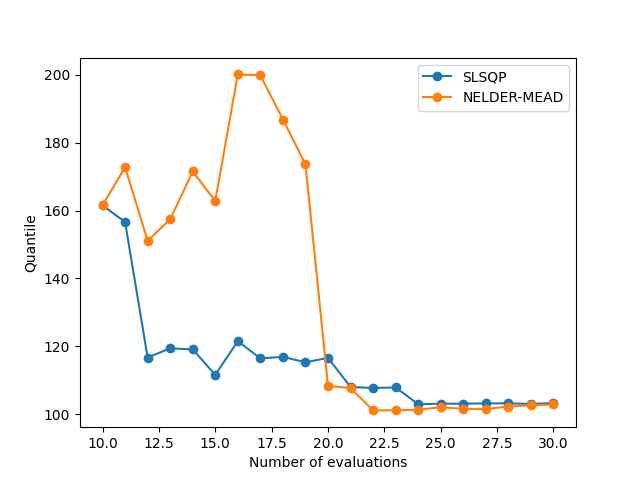
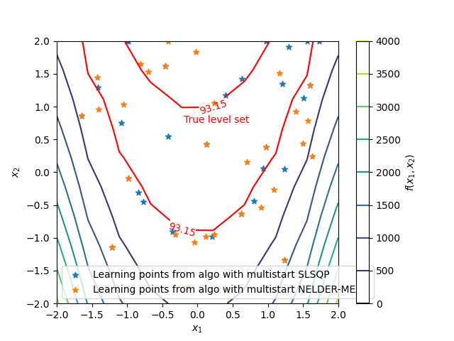

Note
Click here to download the full example code
Acquisition algorithm.¶
from __future__ import annotations
import matplotlib.pyplot as plt
from gemseo import configure
from gemseo import configure_logger
from gemseo import sample_disciplines
from gemseo.mlearning.regression.algos.ot_gpr import OTGaussianProcessRegressor
from gemseo.uncertainty.statistics.empirical_statistics import EmpiricalStatistics
from numpy import concatenate
from numpy import unique
from gemseo_mlearning.active_learning.active_learning_algo import ActiveLearningAlgo
from gemseo_mlearning.problems.rosenbrock.rosenbrock_discipline import (
RosenbrockDiscipline,
)
from gemseo_mlearning.problems.rosenbrock.rosenbrock_space import RosenbrockSpace
# Update the configuration of |g| to speed up the script (use configure() with care)
configure(False, False, True, False, False, False, False)
configure_logger()
Out:
<RootLogger root (INFO)>
The use of active learning methods dedicated to quantile estimation is illustrated in this example. More specifically, we aim to test here the impact of the choice of the optimization algorithm used to find the next acquisition point on the active learning procedure. The function with the quantile of interest is the Rosenbrock function \(f(x_1,x_2)=(1-x_1)^2+100(x_2-x_1^2)^2\):
discipline = RosenbrockDiscipline()
with \(x_1\) and \(x_2\) uniformly distributed over \([-2,2]^2\):
uncertain_space = RosenbrockSpace()
First, we create an initial training dataset using an optimal LHS including 10 samples:
learning_dataset = sample_disciplines(
[discipline], uncertain_space, "y", algo_name="OT_OPT_LHS", n_samples=10
)
Out:
WARNING - 05:10:05: No coupling in MDA, switching chain_linearize to True.
INFO - 05:10:05: *** Start Sampling execution ***
INFO - 05:10:05: Sampling
INFO - 05:10:05: Disciplines: RosenbrockDiscipline
INFO - 05:10:05: MDO formulation: MDF
INFO - 05:10:05: Running the algorithm OT_OPT_LHS:
INFO - 05:10:05: 10%|█ | 1/10 [00:00<00:00, 2870.84 it/sec]
INFO - 05:10:05: 20%|██ | 2/10 [00:00<00:00, 3114.97 it/sec]
INFO - 05:10:05: 30%|███ | 3/10 [00:00<00:00, 3128.52 it/sec]
INFO - 05:10:05: 40%|████ | 4/10 [00:00<00:00, 3326.83 it/sec]
INFO - 05:10:05: 50%|█████ | 5/10 [00:00<00:00, 3441.90 it/sec]
INFO - 05:10:05: 60%|██████ | 6/10 [00:00<00:00, 3488.47 it/sec]
INFO - 05:10:05: 70%|███████ | 7/10 [00:00<00:00, 3570.49 it/sec]
INFO - 05:10:05: 80%|████████ | 8/10 [00:00<00:00, 3632.61 it/sec]
INFO - 05:10:05: 90%|█████████ | 9/10 [00:00<00:00, 3669.91 it/sec]
INFO - 05:10:05: 100%|██████████| 10/10 [00:00<00:00, 3685.03 it/sec]
INFO - 05:10:05: *** End Sampling execution ***
and two identical initial Gaussian process regressors from OpenTURNS:
regressor_1 = OTGaussianProcessRegressor(learning_dataset, trend="quadratic")
regressor_2 = OTGaussianProcessRegressor(learning_dataset, trend="quadratic")
Then, we build two active learning algorithms to test the impact of the choice of acquisition algorithm used to optimize the acquisition criterion on the active learning procedure. One uses the SLSQP gradient-based routine in a multistart fashion (default) for the optimization of the acquisition criterion, and the second the NELDER-MEAD gradient-free algorithm, also in a multistart fashion. All other settings are put to their default values.
level = 0.35
active_learning_1 = ActiveLearningAlgo(
"Quantile",
uncertain_space,
regressor_1,
level=level,
uncertain_space=uncertain_space,
)
active_learning_2 = ActiveLearningAlgo(
"Quantile",
uncertain_space,
regressor_2,
level=level,
uncertain_space=uncertain_space,
)
active_learning_1.acquire_new_points(discipline, n_samples=20)
active_learning_2.set_acquisition_algorithm(
algo_name="MultiStart", opt_algo_name="NELDER-MEAD", n_start=20
)
active_learning_2.acquire_new_points(discipline, n_samples=20)
Out:
INFO - 05:10:05: Acquiring 20 points in batches of 1
INFO - 05:10:06: 5%|5 | 1/20 [00:00<00:08, 2.33 it/sec]
/builds/gemseo/dev/gemseo-mlearning/src/gemseo_mlearning/active_learning/acquisition_criteria/level_set/u.py:71: RuntimeWarning: divide by zero encountered in divide
abs(self._output_value - self._compute_mean(input_value))
INFO - 05:10:06: 10%|# | 2/20 [00:00<00:07, 2.31 it/sec]
INFO - 05:10:07: 15%|#5 | 3/20 [00:01<00:07, 2.30 it/sec]
/builds/gemseo/dev/gemseo-mlearning/src/gemseo_mlearning/active_learning/acquisition_criteria/level_set/u.py:71: RuntimeWarning: divide by zero encountered in divide
abs(self._output_value - self._compute_mean(input_value))
INFO - 05:10:07: 20%|## | 4/20 [00:01<00:06, 2.29 it/sec]
INFO - 05:10:07: 25%|##5 | 5/20 [00:02<00:06, 2.27 it/sec]
INFO - 05:10:08: 30%|### | 6/20 [00:02<00:06, 2.26 it/sec]
INFO - 05:10:08: 35%|###5 | 7/20 [00:03<00:05, 2.24 it/sec]
/builds/gemseo/dev/gemseo-mlearning/src/gemseo_mlearning/active_learning/acquisition_criteria/level_set/u.py:71: RuntimeWarning: divide by zero encountered in divide
abs(self._output_value - self._compute_mean(input_value))
INFO - 05:10:09: 40%|#### | 8/20 [00:03<00:05, 2.22 it/sec]
INFO - 05:10:09: 45%|####5 | 9/20 [00:04<00:05, 2.20 it/sec]
INFO - 05:10:10: 50%|##### | 10/20 [00:04<00:04, 2.19 it/sec]
/builds/gemseo/dev/gemseo-mlearning/src/gemseo_mlearning/active_learning/acquisition_criteria/level_set/u.py:71: RuntimeWarning: divide by zero encountered in divide
abs(self._output_value - self._compute_mean(input_value))
INFO - 05:10:10: 55%|#####5 | 11/20 [00:05<00:04, 2.18 it/sec]
INFO - 05:10:11: 60%|###### | 12/20 [00:05<00:03, 2.19 it/sec]
/builds/gemseo/dev/gemseo-mlearning/src/gemseo_mlearning/active_learning/acquisition_criteria/level_set/u.py:71: RuntimeWarning: divide by zero encountered in divide
abs(self._output_value - self._compute_mean(input_value))
INFO - 05:10:11: 65%|######5 | 13/20 [00:05<00:03, 2.20 it/sec]
INFO - 05:10:12: 70%|####### | 14/20 [00:06<00:02, 2.19 it/sec]
/builds/gemseo/dev/gemseo-mlearning/src/gemseo_mlearning/active_learning/acquisition_criteria/level_set/u.py:71: RuntimeWarning: divide by zero encountered in divide
abs(self._output_value - self._compute_mean(input_value))
INFO - 05:10:12: 75%|#######5 | 15/20 [00:06<00:02, 2.17 it/sec]
/builds/gemseo/dev/gemseo-mlearning/src/gemseo_mlearning/active_learning/acquisition_criteria/level_set/u.py:71: RuntimeWarning: divide by zero encountered in divide
abs(self._output_value - self._compute_mean(input_value))
INFO - 05:10:13: 80%|######## | 16/20 [00:07<00:01, 2.16 it/sec]
INFO - 05:10:13: 85%|########5 | 17/20 [00:07<00:01, 2.15 it/sec]
/builds/gemseo/dev/gemseo-mlearning/src/gemseo_mlearning/active_learning/acquisition_criteria/level_set/u.py:71: RuntimeWarning: divide by zero encountered in divide
abs(self._output_value - self._compute_mean(input_value))
INFO - 05:10:14: 90%|######### | 18/20 [00:08<00:01, 2.13 it/sec]
INFO - 05:10:14: 95%|#########5| 19/20 [00:08<00:00, 2.12 it/sec]
INFO - 05:10:15: 100%|##########| 20/20 [00:09<00:00, 2.11 it/sec]
INFO - 05:10:15: 100%|##########| 20/20 [00:09<00:00, 2.11 it/sec]
INFO - 05:10:15: Acquiring 20 points in batches of 1
/builds/gemseo/dev/gemseo-mlearning/.tox/doc/lib64/python3.9/site-packages/gemseo/algos/opt/scipy_local/scipy_local.py:155: RuntimeWarning: Method Nelder-Mead does not use gradient information (jac).
opt_result = minimize(
INFO - 05:10:16: 5%|5 | 1/20 [00:01<00:22, 50.39 it/min]
/builds/gemseo/dev/gemseo-mlearning/.tox/doc/lib64/python3.9/site-packages/gemseo/algos/opt/scipy_local/scipy_local.py:155: RuntimeWarning: Method Nelder-Mead does not use gradient information (jac).
opt_result = minimize(
INFO - 05:10:17: 10%|# | 2/20 [00:02<00:21, 50.25 it/min]
/builds/gemseo/dev/gemseo-mlearning/.tox/doc/lib64/python3.9/site-packages/gemseo/algos/opt/scipy_local/scipy_local.py:155: RuntimeWarning: Method Nelder-Mead does not use gradient information (jac).
opt_result = minimize(
INFO - 05:10:18: 15%|#5 | 3/20 [00:03<00:20, 50.40 it/min]
/builds/gemseo/dev/gemseo-mlearning/src/gemseo_mlearning/active_learning/acquisition_criteria/level_set/u.py:71: RuntimeWarning: divide by zero encountered in divide
abs(self._output_value - self._compute_mean(input_value))
/builds/gemseo/dev/gemseo-mlearning/.tox/doc/lib64/python3.9/site-packages/gemseo/algos/opt/scipy_local/scipy_local.py:155: RuntimeWarning: Method Nelder-Mead does not use gradient information (jac).
opt_result = minimize(
INFO - 05:10:19: 20%|## | 4/20 [00:04<00:19, 50.42 it/min]
/builds/gemseo/dev/gemseo-mlearning/.tox/doc/lib64/python3.9/site-packages/gemseo/algos/opt/scipy_local/scipy_local.py:155: RuntimeWarning: Method Nelder-Mead does not use gradient information (jac).
opt_result = minimize(
INFO - 05:10:21: 25%|##5 | 5/20 [00:05<00:17, 50.38 it/min]
/builds/gemseo/dev/gemseo-mlearning/.tox/doc/lib64/python3.9/site-packages/gemseo/algos/opt/scipy_local/scipy_local.py:155: RuntimeWarning: Method Nelder-Mead does not use gradient information (jac).
opt_result = minimize(
INFO - 05:10:22: 30%|### | 6/20 [00:07<00:16, 50.28 it/min]
/builds/gemseo/dev/gemseo-mlearning/.tox/doc/lib64/python3.9/site-packages/gemseo/algos/opt/scipy_local/scipy_local.py:155: RuntimeWarning: Method Nelder-Mead does not use gradient information (jac).
opt_result = minimize(
INFO - 05:10:23: 35%|###5 | 7/20 [00:08<00:15, 50.16 it/min]
/builds/gemseo/dev/gemseo-mlearning/.tox/doc/lib64/python3.9/site-packages/gemseo/algos/opt/scipy_local/scipy_local.py:155: RuntimeWarning: Method Nelder-Mead does not use gradient information (jac).
opt_result = minimize(
INFO - 05:10:24: 40%|#### | 8/20 [00:09<00:14, 50.03 it/min]
/builds/gemseo/dev/gemseo-mlearning/src/gemseo_mlearning/active_learning/acquisition_criteria/level_set/u.py:71: RuntimeWarning: divide by zero encountered in divide
abs(self._output_value - self._compute_mean(input_value))
/builds/gemseo/dev/gemseo-mlearning/.tox/doc/lib64/python3.9/site-packages/gemseo/algos/opt/scipy_local/scipy_local.py:155: RuntimeWarning: Method Nelder-Mead does not use gradient information (jac).
opt_result = minimize(
INFO - 05:10:26: 45%|####5 | 9/20 [00:10<00:13, 49.90 it/min]
/builds/gemseo/dev/gemseo-mlearning/.tox/doc/lib64/python3.9/site-packages/gemseo/algos/opt/scipy_local/scipy_local.py:155: RuntimeWarning: Method Nelder-Mead does not use gradient information (jac).
opt_result = minimize(
INFO - 05:10:27: 50%|##### | 10/20 [00:12<00:12, 49.79 it/min]
/builds/gemseo/dev/gemseo-mlearning/.tox/doc/lib64/python3.9/site-packages/gemseo/algos/opt/scipy_local/scipy_local.py:155: RuntimeWarning: Method Nelder-Mead does not use gradient information (jac).
opt_result = minimize(
INFO - 05:10:28: 55%|#####5 | 11/20 [00:13<00:10, 50.46 it/min]
/builds/gemseo/dev/gemseo-mlearning/.tox/doc/lib64/python3.9/site-packages/gemseo/algos/opt/scipy_local/scipy_local.py:155: RuntimeWarning: Method Nelder-Mead does not use gradient information (jac).
opt_result = minimize(
INFO - 05:10:29: 60%|###### | 12/20 [00:14<00:09, 50.96 it/min]
/builds/gemseo/dev/gemseo-mlearning/.tox/doc/lib64/python3.9/site-packages/gemseo/algos/opt/scipy_local/scipy_local.py:155: RuntimeWarning: Method Nelder-Mead does not use gradient information (jac).
opt_result = minimize(
INFO - 05:10:30: 65%|######5 | 13/20 [00:15<00:07, 51.13 it/min]
/builds/gemseo/dev/gemseo-mlearning/.tox/doc/lib64/python3.9/site-packages/gemseo/algos/opt/scipy_local/scipy_local.py:155: RuntimeWarning: Method Nelder-Mead does not use gradient information (jac).
opt_result = minimize(
INFO - 05:10:31: 70%|####### | 14/20 [00:16<00:06, 51.23 it/min]
/builds/gemseo/dev/gemseo-mlearning/.tox/doc/lib64/python3.9/site-packages/gemseo/algos/opt/scipy_local/scipy_local.py:155: RuntimeWarning: Method Nelder-Mead does not use gradient information (jac).
opt_result = minimize(
INFO - 05:10:32: 75%|#######5 | 15/20 [00:17<00:05, 51.26 it/min]
/builds/gemseo/dev/gemseo-mlearning/src/gemseo_mlearning/active_learning/acquisition_criteria/level_set/u.py:71: RuntimeWarning: divide by zero encountered in divide
abs(self._output_value - self._compute_mean(input_value))
/builds/gemseo/dev/gemseo-mlearning/.tox/doc/lib64/python3.9/site-packages/gemseo/algos/opt/scipy_local/scipy_local.py:155: RuntimeWarning: Method Nelder-Mead does not use gradient information (jac).
opt_result = minimize(
INFO - 05:10:33: 80%|######## | 16/20 [00:18<00:04, 51.30 it/min]
/builds/gemseo/dev/gemseo-mlearning/.tox/doc/lib64/python3.9/site-packages/gemseo/algos/opt/scipy_local/scipy_local.py:155: RuntimeWarning: Method Nelder-Mead does not use gradient information (jac).
opt_result = minimize(
INFO - 05:10:35: 85%|########5 | 17/20 [00:19<00:03, 51.39 it/min]
/builds/gemseo/dev/gemseo-mlearning/.tox/doc/lib64/python3.9/site-packages/gemseo/algos/opt/scipy_local/scipy_local.py:155: RuntimeWarning: Method Nelder-Mead does not use gradient information (jac).
opt_result = minimize(
INFO - 05:10:36: 90%|######### | 18/20 [00:20<00:02, 51.45 it/min]
/builds/gemseo/dev/gemseo-mlearning/.tox/doc/lib64/python3.9/site-packages/gemseo/algos/opt/scipy_local/scipy_local.py:155: RuntimeWarning: Method Nelder-Mead does not use gradient information (jac).
opt_result = minimize(
INFO - 05:10:37: 95%|#########5| 19/20 [00:22<00:01, 51.44 it/min]
/builds/gemseo/dev/gemseo-mlearning/.tox/doc/lib64/python3.9/site-packages/gemseo/algos/opt/scipy_local/scipy_local.py:155: RuntimeWarning: Method Nelder-Mead does not use gradient information (jac).
opt_result = minimize(
INFO - 05:10:38: 100%|##########| 20/20 [00:23<00:00, 51.39 it/min]
INFO - 05:10:38: 100%|##########| 20/20 [00:23<00:00, 51.39 it/min]
(<gemseo.algos.database.Database object at 0x7de2d7e89e50>, Optimization problem:
minimize U
with respect to x)
To study the results, we extract first the data associated to the history of the quantity of interest for both active learning procedures
history_1 = active_learning_1.qoi_history
history_2 = active_learning_2.qoi_history
# and we compare them in a plot
plt.plot(history_1[0], concatenate(history_1[1]), marker="o", label="SLSQP")
plt.plot(history_2[0], concatenate(history_2[1]), marker="o", label="NELDER-MEAD")
plt.xlabel("Number of evaluations")
plt.ylabel("Quantile")
plt.legend()
plt.show()

We can also compare the estimated quantile from the active learning procedure to the Monte Carlo estimate for both algorithms
dataset = sample_disciplines(
[discipline], uncertain_space, "y", algo_name="OT_MONTE_CARLO", n_samples=1000
)
reference_quantile = EmpiricalStatistics(dataset, ["y"]).compute_quantile(level)
Out:
WARNING - 05:10:38: No coupling in MDA, switching chain_linearize to True.
INFO - 05:10:38: *** Start Sampling execution ***
INFO - 05:10:38: Sampling
INFO - 05:10:38: Disciplines: RosenbrockDiscipline
INFO - 05:10:38: MDO formulation: MDF
INFO - 05:10:38: Running the algorithm OT_MONTE_CARLO:
INFO - 05:10:38: 1%| | 6/1000 [00:00<00:00, 3653.57 it/sec]
INFO - 05:10:38: 1%| | 7/1000 [00:00<00:00, 3574.84 it/sec]
INFO - 05:10:38: 1%| | 8/1000 [00:00<00:00, 3529.44 it/sec]
INFO - 05:10:38: 1%| | 9/1000 [00:00<00:00, 3488.15 it/sec]
INFO - 05:10:38: 1%| | 10/1000 [00:00<00:00, 3477.86 it/sec]
INFO - 05:10:38: 1%| | 11/1000 [00:00<00:00, 3480.49 it/sec]
INFO - 05:10:38: 1%| | 12/1000 [00:00<00:00, 3468.76 it/sec]
INFO - 05:10:38: 1%|▏ | 13/1000 [00:00<00:00, 3449.92 it/sec]
INFO - 05:10:38: 1%|▏ | 14/1000 [00:00<00:00, 3452.71 it/sec]
INFO - 05:10:38: 2%|▏ | 15/1000 [00:00<00:00, 3449.07 it/sec]
INFO - 05:10:38: 2%|▏ | 16/1000 [00:00<00:00, 3437.25 it/sec]
INFO - 05:10:38: 2%|▏ | 17/1000 [00:00<00:00, 3441.11 it/sec]
INFO - 05:10:38: 2%|▏ | 18/1000 [00:00<00:00, 3440.46 it/sec]
INFO - 05:10:38: 2%|▏ | 19/1000 [00:00<00:00, 3347.41 it/sec]
INFO - 05:10:38: 2%|▏ | 20/1000 [00:00<00:00, 3348.34 it/sec]
INFO - 05:10:38: 2%|▏ | 21/1000 [00:00<00:00, 3347.54 it/sec]
INFO - 05:10:38: 2%|▏ | 22/1000 [00:00<00:00, 3340.02 it/sec]
INFO - 05:10:38: 2%|▏ | 23/1000 [00:00<00:00, 3341.50 it/sec]
INFO - 05:10:38: 2%|▏ | 24/1000 [00:00<00:00, 3341.74 it/sec]
INFO - 05:10:38: 2%|▎ | 25/1000 [00:00<00:00, 3340.58 it/sec]
INFO - 05:10:38: 3%|▎ | 26/1000 [00:00<00:00, 3335.53 it/sec]
INFO - 05:10:38: 3%|▎ | 27/1000 [00:00<00:00, 3342.67 it/sec]
INFO - 05:10:38: 3%|▎ | 28/1000 [00:00<00:00, 3342.07 it/sec]
INFO - 05:10:38: 3%|▎ | 29/1000 [00:00<00:00, 3338.59 it/sec]
INFO - 05:10:38: 3%|▎ | 30/1000 [00:00<00:00, 3338.88 it/sec]
INFO - 05:10:38: 3%|▎ | 31/1000 [00:00<00:00, 3341.47 it/sec]
INFO - 05:10:38: 3%|▎ | 32/1000 [00:00<00:00, 3333.61 it/sec]
INFO - 05:10:38: 3%|▎ | 33/1000 [00:00<00:00, 3334.75 it/sec]
INFO - 05:10:38: 3%|▎ | 34/1000 [00:00<00:00, 3340.59 it/sec]
INFO - 05:10:38: 4%|▎ | 35/1000 [00:00<00:00, 3341.85 it/sec]
INFO - 05:10:38: 4%|▎ | 36/1000 [00:00<00:00, 3340.00 it/sec]
INFO - 05:10:38: 4%|▎ | 37/1000 [00:00<00:00, 3344.02 it/sec]
INFO - 05:10:38: 4%|▍ | 38/1000 [00:00<00:00, 3344.39 it/sec]
INFO - 05:10:38: 4%|▍ | 39/1000 [00:00<00:00, 3342.55 it/sec]
INFO - 05:10:38: 4%|▍ | 40/1000 [00:00<00:00, 3346.07 it/sec]
INFO - 05:10:38: 4%|▍ | 41/1000 [00:00<00:00, 3347.02 it/sec]
INFO - 05:10:38: 4%|▍ | 42/1000 [00:00<00:00, 3346.01 it/sec]
INFO - 05:10:38: 4%|▍ | 43/1000 [00:00<00:00, 3347.78 it/sec]
INFO - 05:10:38: 4%|▍ | 44/1000 [00:00<00:00, 3352.64 it/sec]
INFO - 05:10:38: 4%|▍ | 45/1000 [00:00<00:00, 3354.25 it/sec]
INFO - 05:10:38: 5%|▍ | 46/1000 [00:00<00:00, 3352.76 it/sec]
INFO - 05:10:38: 5%|▍ | 47/1000 [00:00<00:00, 3356.36 it/sec]
INFO - 05:10:38: 5%|▍ | 48/1000 [00:00<00:00, 3358.35 it/sec]
INFO - 05:10:38: 5%|▍ | 49/1000 [00:00<00:00, 3356.98 it/sec]
INFO - 05:10:38: 5%|▌ | 50/1000 [00:00<00:00, 3360.12 it/sec]
INFO - 05:10:38: 5%|▌ | 51/1000 [00:00<00:00, 3357.76 it/sec]
INFO - 05:10:38: 5%|▌ | 52/1000 [00:00<00:00, 3358.28 it/sec]
INFO - 05:10:38: 5%|▌ | 53/1000 [00:00<00:00, 3356.41 it/sec]
INFO - 05:10:38: 5%|▌ | 54/1000 [00:00<00:00, 3359.47 it/sec]
INFO - 05:10:38: 6%|▌ | 55/1000 [00:00<00:00, 3361.21 it/sec]
INFO - 05:10:38: 6%|▌ | 56/1000 [00:00<00:00, 3359.86 it/sec]
INFO - 05:10:38: 6%|▌ | 57/1000 [00:00<00:00, 3361.34 it/sec]
INFO - 05:10:38: 6%|▌ | 58/1000 [00:00<00:00, 3362.40 it/sec]
INFO - 05:10:38: 6%|▌ | 59/1000 [00:00<00:00, 3361.51 it/sec]
INFO - 05:10:38: 6%|▌ | 60/1000 [00:00<00:00, 3362.62 it/sec]
INFO - 05:10:38: 6%|▌ | 61/1000 [00:00<00:00, 3364.31 it/sec]
INFO - 05:10:38: 6%|▌ | 62/1000 [00:00<00:00, 3365.43 it/sec]
INFO - 05:10:38: 6%|▋ | 63/1000 [00:00<00:00, 3363.30 it/sec]
INFO - 05:10:38: 6%|▋ | 64/1000 [00:00<00:00, 3365.50 it/sec]
INFO - 05:10:38: 6%|▋ | 65/1000 [00:00<00:00, 3366.05 it/sec]
INFO - 05:10:38: 7%|▋ | 66/1000 [00:00<00:00, 3364.62 it/sec]
INFO - 05:10:38: 7%|▋ | 67/1000 [00:00<00:00, 3365.97 it/sec]
INFO - 05:10:38: 7%|▋ | 68/1000 [00:00<00:00, 3369.08 it/sec]
INFO - 05:10:38: 7%|▋ | 69/1000 [00:00<00:00, 3369.66 it/sec]
INFO - 05:10:38: 7%|▋ | 70/1000 [00:00<00:00, 3368.57 it/sec]
INFO - 05:10:38: 7%|▋ | 71/1000 [00:00<00:00, 3371.40 it/sec]
INFO - 05:10:38: 7%|▋ | 72/1000 [00:00<00:00, 3372.27 it/sec]
INFO - 05:10:38: 7%|▋ | 73/1000 [00:00<00:00, 3371.18 it/sec]
INFO - 05:10:38: 7%|▋ | 74/1000 [00:00<00:00, 3372.76 it/sec]
INFO - 05:10:38: 8%|▊ | 75/1000 [00:00<00:00, 3374.01 it/sec]
INFO - 05:10:38: 8%|▊ | 76/1000 [00:00<00:00, 3375.55 it/sec]
INFO - 05:10:38: 8%|▊ | 77/1000 [00:00<00:00, 3374.66 it/sec]
INFO - 05:10:38: 8%|▊ | 78/1000 [00:00<00:00, 3375.91 it/sec]
INFO - 05:10:38: 8%|▊ | 79/1000 [00:00<00:00, 3376.26 it/sec]
INFO - 05:10:38: 8%|▊ | 80/1000 [00:00<00:00, 3382.50 it/sec]
INFO - 05:10:38: 8%|▊ | 81/1000 [00:00<00:00, 3393.38 it/sec]
INFO - 05:10:38: 8%|▊ | 82/1000 [00:00<00:00, 3404.50 it/sec]
INFO - 05:10:38: 8%|▊ | 83/1000 [00:00<00:00, 3414.32 it/sec]
INFO - 05:10:38: 8%|▊ | 84/1000 [00:00<00:00, 3425.05 it/sec]
INFO - 05:10:38: 8%|▊ | 85/1000 [00:00<00:00, 3432.20 it/sec]
INFO - 05:10:38: 9%|▊ | 86/1000 [00:00<00:00, 3441.96 it/sec]
INFO - 05:10:38: 9%|▊ | 87/1000 [00:00<00:00, 3451.55 it/sec]
INFO - 05:10:38: 9%|▉ | 88/1000 [00:00<00:00, 3459.19 it/sec]
INFO - 05:10:38: 9%|▉ | 89/1000 [00:00<00:00, 3465.47 it/sec]
INFO - 05:10:38: 9%|▉ | 90/1000 [00:00<00:00, 3474.63 it/sec]
INFO - 05:10:38: 9%|▉ | 91/1000 [00:00<00:00, 3483.80 it/sec]
INFO - 05:10:38: 9%|▉ | 92/1000 [00:00<00:00, 3491.46 it/sec]
INFO - 05:10:38: 9%|▉ | 93/1000 [00:00<00:00, 3497.29 it/sec]
INFO - 05:10:38: 9%|▉ | 94/1000 [00:00<00:00, 3505.13 it/sec]
INFO - 05:10:38: 10%|▉ | 95/1000 [00:00<00:00, 3512.32 it/sec]
INFO - 05:10:38: 10%|▉ | 96/1000 [00:00<00:00, 3518.00 it/sec]
INFO - 05:10:38: 10%|▉ | 97/1000 [00:00<00:00, 3524.56 it/sec]
INFO - 05:10:38: 10%|▉ | 98/1000 [00:00<00:00, 3528.56 it/sec]
INFO - 05:10:38: 10%|▉ | 99/1000 [00:00<00:00, 3536.21 it/sec]
INFO - 05:10:38: 10%|█ | 100/1000 [00:00<00:00, 3543.38 it/sec]
INFO - 05:10:38: 10%|█ | 101/1000 [00:00<00:00, 3550.50 it/sec]
INFO - 05:10:38: 10%|█ | 102/1000 [00:00<00:00, 3555.77 it/sec]
INFO - 05:10:38: 10%|█ | 103/1000 [00:00<00:00, 3563.29 it/sec]
INFO - 05:10:38: 10%|█ | 104/1000 [00:00<00:00, 3570.96 it/sec]
INFO - 05:10:38: 10%|█ | 105/1000 [00:00<00:00, 3576.67 it/sec]
INFO - 05:10:38: 11%|█ | 106/1000 [00:00<00:00, 3581.61 it/sec]
INFO - 05:10:38: 11%|█ | 107/1000 [00:00<00:00, 3588.63 it/sec]
INFO - 05:10:38: 11%|█ | 108/1000 [00:00<00:00, 3595.97 it/sec]
INFO - 05:10:38: 11%|█ | 109/1000 [00:00<00:00, 3601.20 it/sec]
INFO - 05:10:38: 11%|█ | 110/1000 [00:00<00:00, 3607.64 it/sec]
INFO - 05:10:38: 11%|█ | 111/1000 [00:00<00:00, 3609.98 it/sec]
INFO - 05:10:38: 11%|█ | 112/1000 [00:00<00:00, 3616.61 it/sec]
INFO - 05:10:38: 11%|█▏ | 113/1000 [00:00<00:00, 3622.80 it/sec]
INFO - 05:10:38: 11%|█▏ | 114/1000 [00:00<00:00, 3627.38 it/sec]
INFO - 05:10:38: 12%|█▏ | 115/1000 [00:00<00:00, 3631.46 it/sec]
INFO - 05:10:38: 12%|█▏ | 116/1000 [00:00<00:00, 3636.78 it/sec]
INFO - 05:10:38: 12%|█▏ | 117/1000 [00:00<00:00, 3642.02 it/sec]
INFO - 05:10:38: 12%|█▏ | 118/1000 [00:00<00:00, 3645.90 it/sec]
INFO - 05:10:38: 12%|█▏ | 119/1000 [00:00<00:00, 3649.54 it/sec]
INFO - 05:10:38: 12%|█▏ | 120/1000 [00:00<00:00, 3654.98 it/sec]
INFO - 05:10:38: 12%|█▏ | 121/1000 [00:00<00:00, 3660.82 it/sec]
INFO - 05:10:38: 12%|█▏ | 122/1000 [00:00<00:00, 3665.72 it/sec]
INFO - 05:10:38: 12%|█▏ | 123/1000 [00:00<00:00, 3671.02 it/sec]
INFO - 05:10:38: 12%|█▏ | 124/1000 [00:00<00:00, 3673.68 it/sec]
INFO - 05:10:38: 12%|█▎ | 125/1000 [00:00<00:00, 3679.29 it/sec]
INFO - 05:10:38: 13%|█▎ | 126/1000 [00:00<00:00, 3684.60 it/sec]
INFO - 05:10:38: 13%|█▎ | 127/1000 [00:00<00:00, 3681.58 it/sec]
INFO - 05:10:38: 13%|█▎ | 128/1000 [00:00<00:00, 3684.14 it/sec]
INFO - 05:10:38: 13%|█▎ | 129/1000 [00:00<00:00, 3688.92 it/sec]
INFO - 05:10:38: 13%|█▎ | 130/1000 [00:00<00:00, 3692.07 it/sec]
INFO - 05:10:38: 13%|█▎ | 131/1000 [00:00<00:00, 3695.77 it/sec]
INFO - 05:10:38: 13%|█▎ | 132/1000 [00:00<00:00, 3698.98 it/sec]
INFO - 05:10:38: 13%|█▎ | 133/1000 [00:00<00:00, 3703.91 it/sec]
INFO - 05:10:38: 13%|█▎ | 134/1000 [00:00<00:00, 3708.61 it/sec]
INFO - 05:10:38: 14%|█▎ | 135/1000 [00:00<00:00, 3712.55 it/sec]
INFO - 05:10:38: 14%|█▎ | 136/1000 [00:00<00:00, 3715.42 it/sec]
INFO - 05:10:38: 14%|█▎ | 137/1000 [00:00<00:00, 3720.04 it/sec]
INFO - 05:10:38: 14%|█▍ | 138/1000 [00:00<00:00, 3724.34 it/sec]
INFO - 05:10:38: 14%|█▍ | 139/1000 [00:00<00:00, 3728.17 it/sec]
INFO - 05:10:38: 14%|█▍ | 140/1000 [00:00<00:00, 3732.51 it/sec]
INFO - 05:10:38: 14%|█▍ | 141/1000 [00:00<00:00, 3734.74 it/sec]
INFO - 05:10:38: 14%|█▍ | 142/1000 [00:00<00:00, 3739.44 it/sec]
INFO - 05:10:38: 14%|█▍ | 143/1000 [00:00<00:00, 3744.07 it/sec]
INFO - 05:10:38: 14%|█▍ | 144/1000 [00:00<00:00, 3747.26 it/sec]
INFO - 05:10:38: 14%|█▍ | 145/1000 [00:00<00:00, 3749.79 it/sec]
INFO - 05:10:38: 15%|█▍ | 146/1000 [00:00<00:00, 3753.84 it/sec]
INFO - 05:10:38: 15%|█▍ | 147/1000 [00:00<00:00, 3758.27 it/sec]
INFO - 05:10:38: 15%|█▍ | 148/1000 [00:00<00:00, 3761.91 it/sec]
INFO - 05:10:38: 15%|█▍ | 149/1000 [00:00<00:00, 3764.40 it/sec]
INFO - 05:10:38: 15%|█▌ | 150/1000 [00:00<00:00, 3767.97 it/sec]
INFO - 05:10:38: 15%|█▌ | 151/1000 [00:00<00:00, 3772.28 it/sec]
INFO - 05:10:38: 15%|█▌ | 152/1000 [00:00<00:00, 3775.65 it/sec]
INFO - 05:10:38: 15%|█▌ | 153/1000 [00:00<00:00, 3779.83 it/sec]
INFO - 05:10:38: 15%|█▌ | 154/1000 [00:00<00:00, 3782.30 it/sec]
INFO - 05:10:38: 16%|█▌ | 155/1000 [00:00<00:00, 3786.42 it/sec]
INFO - 05:10:38: 16%|█▌ | 156/1000 [00:00<00:00, 3790.54 it/sec]
INFO - 05:10:38: 16%|█▌ | 157/1000 [00:00<00:00, 3793.94 it/sec]
INFO - 05:10:38: 16%|█▌ | 158/1000 [00:00<00:00, 3794.97 it/sec]
INFO - 05:10:38: 16%|█▌ | 159/1000 [00:00<00:00, 3797.96 it/sec]
INFO - 05:10:38: 16%|█▌ | 160/1000 [00:00<00:00, 3801.77 it/sec]
INFO - 05:10:38: 16%|█▌ | 161/1000 [00:00<00:00, 3804.65 it/sec]
INFO - 05:10:38: 16%|█▌ | 162/1000 [00:00<00:00, 3807.11 it/sec]
INFO - 05:10:38: 16%|█▋ | 163/1000 [00:00<00:00, 3810.33 it/sec]
INFO - 05:10:38: 16%|█▋ | 164/1000 [00:00<00:00, 3814.25 it/sec]
INFO - 05:10:38: 16%|█▋ | 165/1000 [00:00<00:00, 3817.40 it/sec]
INFO - 05:10:38: 17%|█▋ | 166/1000 [00:00<00:00, 3820.98 it/sec]
INFO - 05:10:38: 17%|█▋ | 167/1000 [00:00<00:00, 3823.39 it/sec]
INFO - 05:10:38: 17%|█▋ | 168/1000 [00:00<00:00, 3827.09 it/sec]
INFO - 05:10:38: 17%|█▋ | 169/1000 [00:00<00:00, 3830.77 it/sec]
INFO - 05:10:38: 17%|█▋ | 170/1000 [00:00<00:00, 3833.75 it/sec]
INFO - 05:10:38: 17%|█▋ | 171/1000 [00:00<00:00, 3835.33 it/sec]
INFO - 05:10:38: 17%|█▋ | 172/1000 [00:00<00:00, 3838.38 it/sec]
INFO - 05:10:38: 17%|█▋ | 173/1000 [00:00<00:00, 3841.69 it/sec]
INFO - 05:10:38: 17%|█▋ | 174/1000 [00:00<00:00, 3844.24 it/sec]
INFO - 05:10:38: 18%|█▊ | 175/1000 [00:00<00:00, 3847.00 it/sec]
INFO - 05:10:38: 18%|█▊ | 176/1000 [00:00<00:00, 3848.25 it/sec]
INFO - 05:10:38: 18%|█▊ | 177/1000 [00:00<00:00, 3851.44 it/sec]
INFO - 05:10:38: 18%|█▊ | 178/1000 [00:00<00:00, 3855.12 it/sec]
INFO - 05:10:38: 18%|█▊ | 179/1000 [00:00<00:00, 3857.75 it/sec]
INFO - 05:10:38: 18%|█▊ | 180/1000 [00:00<00:00, 3859.35 it/sec]
INFO - 05:10:38: 18%|█▊ | 181/1000 [00:00<00:00, 3862.20 it/sec]
INFO - 05:10:38: 18%|█▊ | 182/1000 [00:00<00:00, 3864.52 it/sec]
INFO - 05:10:38: 18%|█▊ | 183/1000 [00:00<00:00, 3866.75 it/sec]
INFO - 05:10:38: 18%|█▊ | 184/1000 [00:00<00:00, 3868.41 it/sec]
INFO - 05:10:38: 18%|█▊ | 185/1000 [00:00<00:00, 3871.14 it/sec]
INFO - 05:10:38: 19%|█▊ | 186/1000 [00:00<00:00, 3874.11 it/sec]
INFO - 05:10:38: 19%|█▊ | 187/1000 [00:00<00:00, 3876.72 it/sec]
INFO - 05:10:38: 19%|█▉ | 188/1000 [00:00<00:00, 3879.70 it/sec]
INFO - 05:10:38: 19%|█▉ | 189/1000 [00:00<00:00, 3881.37 it/sec]
INFO - 05:10:38: 19%|█▉ | 190/1000 [00:00<00:00, 3884.26 it/sec]
INFO - 05:10:38: 19%|█▉ | 191/1000 [00:00<00:00, 3887.44 it/sec]
INFO - 05:10:38: 19%|█▉ | 192/1000 [00:00<00:00, 3889.73 it/sec]
INFO - 05:10:38: 19%|█▉ | 193/1000 [00:00<00:00, 3891.04 it/sec]
INFO - 05:10:38: 19%|█▉ | 194/1000 [00:00<00:00, 3893.89 it/sec]
INFO - 05:10:38: 20%|█▉ | 195/1000 [00:00<00:00, 3897.05 it/sec]
INFO - 05:10:38: 20%|█▉ | 196/1000 [00:00<00:00, 3899.46 it/sec]
INFO - 05:10:38: 20%|█▉ | 197/1000 [00:00<00:00, 3902.25 it/sec]
INFO - 05:10:38: 20%|█▉ | 198/1000 [00:00<00:00, 3903.93 it/sec]
INFO - 05:10:38: 20%|█▉ | 199/1000 [00:00<00:00, 3906.61 it/sec]
INFO - 05:10:38: 20%|██ | 200/1000 [00:00<00:00, 3909.72 it/sec]
INFO - 05:10:38: 20%|██ | 201/1000 [00:00<00:00, 3911.74 it/sec]
INFO - 05:10:38: 20%|██ | 202/1000 [00:00<00:00, 3912.98 it/sec]
INFO - 05:10:38: 20%|██ | 203/1000 [00:00<00:00, 3915.55 it/sec]
INFO - 05:10:38: 20%|██ | 204/1000 [00:00<00:00, 3918.31 it/sec]
INFO - 05:10:38: 20%|██ | 205/1000 [00:00<00:00, 3920.37 it/sec]
INFO - 05:10:38: 21%|██ | 206/1000 [00:00<00:00, 3923.01 it/sec]
INFO - 05:10:38: 21%|██ | 207/1000 [00:00<00:00, 3923.86 it/sec]
INFO - 05:10:38: 21%|██ | 208/1000 [00:00<00:00, 3926.49 it/sec]
INFO - 05:10:38: 21%|██ | 209/1000 [00:00<00:00, 3929.13 it/sec]
INFO - 05:10:38: 21%|██ | 210/1000 [00:00<00:00, 3930.90 it/sec]
INFO - 05:10:38: 21%|██ | 211/1000 [00:00<00:00, 3932.17 it/sec]
INFO - 05:10:38: 21%|██ | 212/1000 [00:00<00:00, 3934.57 it/sec]
INFO - 05:10:38: 21%|██▏ | 213/1000 [00:00<00:00, 3936.34 it/sec]
INFO - 05:10:38: 21%|██▏ | 214/1000 [00:00<00:00, 3937.43 it/sec]
INFO - 05:10:38: 22%|██▏ | 215/1000 [00:00<00:00, 3938.38 it/sec]
INFO - 05:10:38: 22%|██▏ | 216/1000 [00:00<00:00, 3940.63 it/sec]
INFO - 05:10:38: 22%|██▏ | 217/1000 [00:00<00:00, 3943.31 it/sec]
INFO - 05:10:38: 22%|██▏ | 218/1000 [00:00<00:00, 3943.07 it/sec]
INFO - 05:10:38: 22%|██▏ | 219/1000 [00:00<00:00, 3945.01 it/sec]
INFO - 05:10:38: 22%|██▏ | 220/1000 [00:00<00:00, 3943.31 it/sec]
INFO - 05:10:38: 22%|██▏ | 221/1000 [00:00<00:00, 3945.15 it/sec]
INFO - 05:10:38: 22%|██▏ | 222/1000 [00:00<00:00, 3946.81 it/sec]
INFO - 05:10:38: 22%|██▏ | 223/1000 [00:00<00:00, 3949.06 it/sec]
INFO - 05:10:38: 22%|██▏ | 224/1000 [00:00<00:00, 3949.69 it/sec]
INFO - 05:10:38: 22%|██▎ | 225/1000 [00:00<00:00, 3951.42 it/sec]
INFO - 05:10:38: 23%|██▎ | 226/1000 [00:00<00:00, 3953.01 it/sec]
INFO - 05:10:38: 23%|██▎ | 227/1000 [00:00<00:00, 3954.49 it/sec]
INFO - 05:10:38: 23%|██▎ | 228/1000 [00:00<00:00, 3955.55 it/sec]
INFO - 05:10:38: 23%|██▎ | 229/1000 [00:00<00:00, 3957.09 it/sec]
INFO - 05:10:38: 23%|██▎ | 230/1000 [00:00<00:00, 3959.21 it/sec]
INFO - 05:10:38: 23%|██▎ | 231/1000 [00:00<00:00, 3960.48 it/sec]
INFO - 05:10:38: 23%|██▎ | 232/1000 [00:00<00:00, 3961.85 it/sec]
INFO - 05:10:38: 23%|██▎ | 233/1000 [00:00<00:00, 3963.16 it/sec]
INFO - 05:10:38: 23%|██▎ | 234/1000 [00:00<00:00, 3965.19 it/sec]
INFO - 05:10:38: 24%|██▎ | 235/1000 [00:00<00:00, 3967.13 it/sec]
INFO - 05:10:38: 24%|██▎ | 236/1000 [00:00<00:00, 3964.82 it/sec]
INFO - 05:10:38: 24%|██▎ | 237/1000 [00:00<00:00, 3965.26 it/sec]
INFO - 05:10:38: 24%|██▍ | 238/1000 [00:00<00:00, 3967.44 it/sec]
INFO - 05:10:38: 24%|██▍ | 239/1000 [00:00<00:00, 3969.74 it/sec]
INFO - 05:10:38: 24%|██▍ | 240/1000 [00:00<00:00, 3970.97 it/sec]
INFO - 05:10:38: 24%|██▍ | 241/1000 [00:00<00:00, 3971.72 it/sec]
INFO - 05:10:38: 24%|██▍ | 242/1000 [00:00<00:00, 3973.71 it/sec]
INFO - 05:10:38: 24%|██▍ | 243/1000 [00:00<00:00, 3975.77 it/sec]
INFO - 05:10:38: 24%|██▍ | 244/1000 [00:00<00:00, 3977.05 it/sec]
INFO - 05:10:38: 24%|██▍ | 245/1000 [00:00<00:00, 3977.94 it/sec]
INFO - 05:10:38: 25%|██▍ | 246/1000 [00:00<00:00, 3979.72 it/sec]
INFO - 05:10:38: 25%|██▍ | 247/1000 [00:00<00:00, 3981.86 it/sec]
INFO - 05:10:38: 25%|██▍ | 248/1000 [00:00<00:00, 3983.32 it/sec]
INFO - 05:10:38: 25%|██▍ | 249/1000 [00:00<00:00, 3985.32 it/sec]
INFO - 05:10:38: 25%|██▌ | 250/1000 [00:00<00:00, 3986.06 it/sec]
INFO - 05:10:38: 25%|██▌ | 251/1000 [00:00<00:00, 3988.05 it/sec]
INFO - 05:10:38: 25%|██▌ | 252/1000 [00:00<00:00, 3990.16 it/sec]
INFO - 05:10:38: 25%|██▌ | 253/1000 [00:00<00:00, 3991.59 it/sec]
INFO - 05:10:38: 25%|██▌ | 254/1000 [00:00<00:00, 3992.23 it/sec]
INFO - 05:10:38: 26%|██▌ | 255/1000 [00:00<00:00, 3993.89 it/sec]
INFO - 05:10:38: 26%|██▌ | 256/1000 [00:00<00:00, 3995.81 it/sec]
INFO - 05:10:38: 26%|██▌ | 257/1000 [00:00<00:00, 3997.05 it/sec]
INFO - 05:10:38: 26%|██▌ | 258/1000 [00:00<00:00, 3998.92 it/sec]
INFO - 05:10:38: 26%|██▌ | 259/1000 [00:00<00:00, 3999.53 it/sec]
INFO - 05:10:38: 26%|██▌ | 260/1000 [00:00<00:00, 4001.42 it/sec]
INFO - 05:10:38: 26%|██▌ | 261/1000 [00:00<00:00, 4003.28 it/sec]
INFO - 05:10:38: 26%|██▌ | 262/1000 [00:00<00:00, 4004.36 it/sec]
INFO - 05:10:38: 26%|██▋ | 263/1000 [00:00<00:00, 4005.16 it/sec]
INFO - 05:10:38: 26%|██▋ | 264/1000 [00:00<00:00, 4006.83 it/sec]
INFO - 05:10:38: 26%|██▋ | 265/1000 [00:00<00:00, 4008.69 it/sec]
INFO - 05:10:38: 27%|██▋ | 266/1000 [00:00<00:00, 4009.91 it/sec]
INFO - 05:10:38: 27%|██▋ | 267/1000 [00:00<00:00, 4010.77 it/sec]
INFO - 05:10:38: 27%|██▋ | 268/1000 [00:00<00:00, 4012.07 it/sec]
INFO - 05:10:38: 27%|██▋ | 269/1000 [00:00<00:00, 4013.33 it/sec]
INFO - 05:10:38: 27%|██▋ | 270/1000 [00:00<00:00, 4014.47 it/sec]
INFO - 05:10:38: 27%|██▋ | 271/1000 [00:00<00:00, 4016.13 it/sec]
INFO - 05:10:38: 27%|██▋ | 272/1000 [00:00<00:00, 4016.68 it/sec]
INFO - 05:10:38: 27%|██▋ | 273/1000 [00:00<00:00, 4018.31 it/sec]
INFO - 05:10:38: 27%|██▋ | 274/1000 [00:00<00:00, 4019.99 it/sec]
INFO - 05:10:38: 28%|██▊ | 275/1000 [00:00<00:00, 4021.20 it/sec]
INFO - 05:10:38: 28%|██▊ | 276/1000 [00:00<00:00, 4021.72 it/sec]
INFO - 05:10:38: 28%|██▊ | 277/1000 [00:00<00:00, 4023.13 it/sec]
INFO - 05:10:38: 28%|██▊ | 278/1000 [00:00<00:00, 4024.90 it/sec]
INFO - 05:10:38: 28%|██▊ | 279/1000 [00:00<00:00, 4026.09 it/sec]
INFO - 05:10:38: 28%|██▊ | 280/1000 [00:00<00:00, 4027.73 it/sec]
INFO - 05:10:38: 28%|██▊ | 281/1000 [00:00<00:00, 4028.17 it/sec]
INFO - 05:10:38: 28%|██▊ | 282/1000 [00:00<00:00, 4029.95 it/sec]
INFO - 05:10:38: 28%|██▊ | 283/1000 [00:00<00:00, 4031.86 it/sec]
INFO - 05:10:38: 28%|██▊ | 284/1000 [00:00<00:00, 4032.96 it/sec]
INFO - 05:10:38: 28%|██▊ | 285/1000 [00:00<00:00, 4033.67 it/sec]
INFO - 05:10:38: 29%|██▊ | 286/1000 [00:00<00:00, 4034.41 it/sec]
INFO - 05:10:38: 29%|██▊ | 287/1000 [00:00<00:00, 4035.85 it/sec]
INFO - 05:10:38: 29%|██▉ | 288/1000 [00:00<00:00, 4036.89 it/sec]
INFO - 05:10:38: 29%|██▉ | 289/1000 [00:00<00:00, 4037.46 it/sec]
INFO - 05:10:38: 29%|██▉ | 290/1000 [00:00<00:00, 4038.77 it/sec]
INFO - 05:10:38: 29%|██▉ | 291/1000 [00:00<00:00, 4040.42 it/sec]
INFO - 05:10:38: 29%|██▉ | 292/1000 [00:00<00:00, 4041.50 it/sec]
INFO - 05:10:38: 29%|██▉ | 293/1000 [00:00<00:00, 4042.95 it/sec]
INFO - 05:10:38: 29%|██▉ | 294/1000 [00:00<00:00, 4043.54 it/sec]
INFO - 05:10:38: 30%|██▉ | 295/1000 [00:00<00:00, 4045.15 it/sec]
INFO - 05:10:38: 30%|██▉ | 296/1000 [00:00<00:00, 4046.75 it/sec]
INFO - 05:10:38: 30%|██▉ | 297/1000 [00:00<00:00, 4047.85 it/sec]
INFO - 05:10:38: 30%|██▉ | 298/1000 [00:00<00:00, 4047.28 it/sec]
INFO - 05:10:38: 30%|██▉ | 299/1000 [00:00<00:00, 4048.06 it/sec]
INFO - 05:10:38: 30%|███ | 300/1000 [00:00<00:00, 4049.48 it/sec]
INFO - 05:10:38: 30%|███ | 301/1000 [00:00<00:00, 4050.43 it/sec]
INFO - 05:10:38: 30%|███ | 302/1000 [00:00<00:00, 4050.58 it/sec]
INFO - 05:10:38: 30%|███ | 303/1000 [00:00<00:00, 4051.76 it/sec]
INFO - 05:10:38: 30%|███ | 304/1000 [00:00<00:00, 4053.34 it/sec]
INFO - 05:10:38: 30%|███ | 305/1000 [00:00<00:00, 4053.15 it/sec]
INFO - 05:10:38: 31%|███ | 306/1000 [00:00<00:00, 4054.29 it/sec]
INFO - 05:10:38: 31%|███ | 307/1000 [00:00<00:00, 4054.64 it/sec]
INFO - 05:10:38: 31%|███ | 308/1000 [00:00<00:00, 4056.22 it/sec]
INFO - 05:10:38: 31%|███ | 309/1000 [00:00<00:00, 4057.34 it/sec]
INFO - 05:10:38: 31%|███ | 310/1000 [00:00<00:00, 4058.32 it/sec]
INFO - 05:10:38: 31%|███ | 311/1000 [00:00<00:00, 4058.68 it/sec]
INFO - 05:10:38: 31%|███ | 312/1000 [00:00<00:00, 4060.04 it/sec]
INFO - 05:10:38: 31%|███▏ | 313/1000 [00:00<00:00, 4061.04 it/sec]
INFO - 05:10:38: 31%|███▏ | 314/1000 [00:00<00:00, 4061.87 it/sec]
INFO - 05:10:38: 32%|███▏ | 315/1000 [00:00<00:00, 4063.11 it/sec]
INFO - 05:10:38: 32%|███▏ | 316/1000 [00:00<00:00, 4063.35 it/sec]
INFO - 05:10:38: 32%|███▏ | 317/1000 [00:00<00:00, 4064.46 it/sec]
INFO - 05:10:38: 32%|███▏ | 318/1000 [00:00<00:00, 4065.49 it/sec]
INFO - 05:10:38: 32%|███▏ | 319/1000 [00:00<00:00, 4066.81 it/sec]
INFO - 05:10:38: 32%|███▏ | 320/1000 [00:00<00:00, 4067.18 it/sec]
INFO - 05:10:38: 32%|███▏ | 321/1000 [00:00<00:00, 4068.45 it/sec]
INFO - 05:10:38: 32%|███▏ | 322/1000 [00:00<00:00, 4069.38 it/sec]
INFO - 05:10:38: 32%|███▏ | 323/1000 [00:00<00:00, 4070.27 it/sec]
INFO - 05:10:38: 32%|███▏ | 324/1000 [00:00<00:00, 4070.51 it/sec]
INFO - 05:10:38: 32%|███▎ | 325/1000 [00:00<00:00, 4071.54 it/sec]
INFO - 05:10:38: 33%|███▎ | 326/1000 [00:00<00:00, 4072.96 it/sec]
INFO - 05:10:38: 33%|███▎ | 327/1000 [00:00<00:00, 4073.95 it/sec]
INFO - 05:10:38: 33%|███▎ | 328/1000 [00:00<00:00, 4075.10 it/sec]
INFO - 05:10:38: 33%|███▎ | 329/1000 [00:00<00:00, 4075.42 it/sec]
INFO - 05:10:38: 33%|███▎ | 330/1000 [00:00<00:00, 4076.58 it/sec]
INFO - 05:10:38: 33%|███▎ | 331/1000 [00:00<00:00, 4077.94 it/sec]
INFO - 05:10:38: 33%|███▎ | 332/1000 [00:00<00:00, 4078.82 it/sec]
INFO - 05:10:38: 33%|███▎ | 333/1000 [00:00<00:00, 4078.92 it/sec]
INFO - 05:10:38: 33%|███▎ | 334/1000 [00:00<00:00, 4080.03 it/sec]
INFO - 05:10:38: 34%|███▎ | 335/1000 [00:00<00:00, 4081.39 it/sec]
INFO - 05:10:38: 34%|███▎ | 336/1000 [00:00<00:00, 4082.27 it/sec]
INFO - 05:10:38: 34%|███▎ | 337/1000 [00:00<00:00, 4082.61 it/sec]
INFO - 05:10:38: 34%|███▍ | 338/1000 [00:00<00:00, 4083.47 it/sec]
INFO - 05:10:38: 34%|███▍ | 339/1000 [00:00<00:00, 4084.86 it/sec]
INFO - 05:10:38: 34%|███▍ | 340/1000 [00:00<00:00, 4085.97 it/sec]
INFO - 05:10:38: 34%|███▍ | 341/1000 [00:00<00:00, 4086.52 it/sec]
INFO - 05:10:38: 34%|███▍ | 342/1000 [00:00<00:00, 4086.54 it/sec]
INFO - 05:10:38: 34%|███▍ | 343/1000 [00:00<00:00, 4087.53 it/sec]
INFO - 05:10:38: 34%|███▍ | 344/1000 [00:00<00:00, 4088.55 it/sec]
INFO - 05:10:38: 34%|███▍ | 345/1000 [00:00<00:00, 4086.10 it/sec]
INFO - 05:10:38: 35%|███▍ | 346/1000 [00:00<00:00, 4086.23 it/sec]
INFO - 05:10:38: 35%|███▍ | 347/1000 [00:00<00:00, 4086.75 it/sec]
INFO - 05:10:38: 35%|███▍ | 348/1000 [00:00<00:00, 4088.00 it/sec]
INFO - 05:10:38: 35%|███▍ | 349/1000 [00:00<00:00, 4088.45 it/sec]
INFO - 05:10:38: 35%|███▌ | 350/1000 [00:00<00:00, 4088.88 it/sec]
INFO - 05:10:38: 35%|███▌ | 351/1000 [00:00<00:00, 4090.07 it/sec]
INFO - 05:10:38: 35%|███▌ | 352/1000 [00:00<00:00, 4091.38 it/sec]
INFO - 05:10:38: 35%|███▌ | 353/1000 [00:00<00:00, 4092.15 it/sec]
INFO - 05:10:38: 35%|███▌ | 354/1000 [00:00<00:00, 4093.38 it/sec]
INFO - 05:10:38: 36%|███▌ | 355/1000 [00:00<00:00, 4093.74 it/sec]
INFO - 05:10:38: 36%|███▌ | 356/1000 [00:00<00:00, 4094.55 it/sec]
INFO - 05:10:38: 36%|███▌ | 357/1000 [00:00<00:00, 4095.76 it/sec]
INFO - 05:10:38: 36%|███▌ | 358/1000 [00:00<00:00, 4096.58 it/sec]
INFO - 05:10:38: 36%|███▌ | 359/1000 [00:00<00:00, 4096.92 it/sec]
INFO - 05:10:38: 36%|███▌ | 360/1000 [00:00<00:00, 4097.82 it/sec]
INFO - 05:10:38: 36%|███▌ | 361/1000 [00:00<00:00, 4098.99 it/sec]
INFO - 05:10:38: 36%|███▌ | 362/1000 [00:00<00:00, 4099.85 it/sec]
INFO - 05:10:38: 36%|███▋ | 363/1000 [00:00<00:00, 4101.01 it/sec]
INFO - 05:10:38: 36%|███▋ | 364/1000 [00:00<00:00, 4099.60 it/sec]
INFO - 05:10:38: 36%|███▋ | 365/1000 [00:00<00:00, 4100.53 it/sec]
INFO - 05:10:38: 37%|███▋ | 366/1000 [00:00<00:00, 4101.13 it/sec]
INFO - 05:10:38: 37%|███▋ | 367/1000 [00:00<00:00, 4102.24 it/sec]
INFO - 05:10:38: 37%|███▋ | 368/1000 [00:00<00:00, 4102.63 it/sec]
INFO - 05:10:38: 37%|███▋ | 369/1000 [00:00<00:00, 4103.84 it/sec]
INFO - 05:10:38: 37%|███▋ | 370/1000 [00:00<00:00, 4105.05 it/sec]
INFO - 05:10:38: 37%|███▋ | 371/1000 [00:00<00:00, 4105.86 it/sec]
INFO - 05:10:38: 37%|███▋ | 372/1000 [00:00<00:00, 4105.96 it/sec]
INFO - 05:10:38: 37%|███▋ | 373/1000 [00:00<00:00, 4106.33 it/sec]
INFO - 05:10:38: 37%|███▋ | 374/1000 [00:00<00:00, 4107.44 it/sec]
INFO - 05:10:38: 38%|███▊ | 375/1000 [00:00<00:00, 4107.39 it/sec]
INFO - 05:10:38: 38%|███▊ | 376/1000 [00:00<00:00, 4107.25 it/sec]
INFO - 05:10:38: 38%|███▊ | 377/1000 [00:00<00:00, 4107.91 it/sec]
INFO - 05:10:38: 38%|███▊ | 378/1000 [00:00<00:00, 4108.93 it/sec]
INFO - 05:10:38: 38%|███▊ | 379/1000 [00:00<00:00, 4109.43 it/sec]
INFO - 05:10:38: 38%|███▊ | 380/1000 [00:00<00:00, 4110.00 it/sec]
INFO - 05:10:38: 38%|███▊ | 381/1000 [00:00<00:00, 4110.11 it/sec]
INFO - 05:10:38: 38%|███▊ | 382/1000 [00:00<00:00, 4111.13 it/sec]
INFO - 05:10:38: 38%|███▊ | 383/1000 [00:00<00:00, 4112.17 it/sec]
INFO - 05:10:38: 38%|███▊ | 384/1000 [00:00<00:00, 4112.80 it/sec]
INFO - 05:10:38: 38%|███▊ | 385/1000 [00:00<00:00, 4113.02 it/sec]
INFO - 05:10:38: 39%|███▊ | 386/1000 [00:00<00:00, 4113.43 it/sec]
INFO - 05:10:38: 39%|███▊ | 387/1000 [00:00<00:00, 4114.49 it/sec]
INFO - 05:10:38: 39%|███▉ | 388/1000 [00:00<00:00, 4115.16 it/sec]
INFO - 05:10:38: 39%|███▉ | 389/1000 [00:00<00:00, 4116.13 it/sec]
INFO - 05:10:38: 39%|███▉ | 390/1000 [00:00<00:00, 4116.20 it/sec]
INFO - 05:10:38: 39%|███▉ | 391/1000 [00:00<00:00, 4117.16 it/sec]
INFO - 05:10:38: 39%|███▉ | 392/1000 [00:00<00:00, 4116.30 it/sec]
INFO - 05:10:38: 39%|███▉ | 393/1000 [00:00<00:00, 4116.94 it/sec]
INFO - 05:10:38: 39%|███▉ | 394/1000 [00:00<00:00, 4116.94 it/sec]
INFO - 05:10:38: 40%|███▉ | 395/1000 [00:00<00:00, 4117.70 it/sec]
INFO - 05:10:38: 40%|███▉ | 396/1000 [00:00<00:00, 4118.55 it/sec]
INFO - 05:10:38: 40%|███▉ | 397/1000 [00:00<00:00, 4118.92 it/sec]
INFO - 05:10:38: 40%|███▉ | 398/1000 [00:00<00:00, 4118.87 it/sec]
INFO - 05:10:38: 40%|███▉ | 399/1000 [00:00<00:00, 4119.59 it/sec]
INFO - 05:10:38: 40%|████ | 400/1000 [00:00<00:00, 4120.17 it/sec]
INFO - 05:10:38: 40%|████ | 401/1000 [00:00<00:00, 4120.49 it/sec]
INFO - 05:10:38: 40%|████ | 402/1000 [00:00<00:00, 4120.69 it/sec]
INFO - 05:10:38: 40%|████ | 403/1000 [00:00<00:00, 4121.41 it/sec]
INFO - 05:10:38: 40%|████ | 404/1000 [00:00<00:00, 4122.48 it/sec]
INFO - 05:10:38: 40%|████ | 405/1000 [00:00<00:00, 4123.23 it/sec]
INFO - 05:10:38: 41%|████ | 406/1000 [00:00<00:00, 4124.14 it/sec]
INFO - 05:10:38: 41%|████ | 407/1000 [00:00<00:00, 4124.42 it/sec]
INFO - 05:10:38: 41%|████ | 408/1000 [00:00<00:00, 4125.30 it/sec]
INFO - 05:10:38: 41%|████ | 409/1000 [00:00<00:00, 4126.42 it/sec]
INFO - 05:10:38: 41%|████ | 410/1000 [00:00<00:00, 4127.08 it/sec]
INFO - 05:10:38: 41%|████ | 411/1000 [00:00<00:00, 4127.09 it/sec]
INFO - 05:10:38: 41%|████ | 412/1000 [00:00<00:00, 4127.88 it/sec]
INFO - 05:10:38: 41%|████▏ | 413/1000 [00:00<00:00, 4128.84 it/sec]
INFO - 05:10:38: 41%|████▏ | 414/1000 [00:00<00:00, 4129.56 it/sec]
INFO - 05:10:38: 42%|████▏ | 415/1000 [00:00<00:00, 4130.44 it/sec]
INFO - 05:10:38: 42%|████▏ | 416/1000 [00:00<00:00, 4130.58 it/sec]
INFO - 05:10:38: 42%|████▏ | 417/1000 [00:00<00:00, 4131.47 it/sec]
INFO - 05:10:38: 42%|████▏ | 418/1000 [00:00<00:00, 4132.41 it/sec]
INFO - 05:10:38: 42%|████▏ | 419/1000 [00:00<00:00, 4132.82 it/sec]
INFO - 05:10:38: 42%|████▏ | 420/1000 [00:00<00:00, 4132.90 it/sec]
INFO - 05:10:38: 42%|████▏ | 421/1000 [00:00<00:00, 4133.61 it/sec]
INFO - 05:10:38: 42%|████▏ | 422/1000 [00:00<00:00, 4134.53 it/sec]
INFO - 05:10:38: 42%|████▏ | 423/1000 [00:00<00:00, 4134.99 it/sec]
INFO - 05:10:38: 42%|████▏ | 424/1000 [00:00<00:00, 4135.80 it/sec]
INFO - 05:10:38: 42%|████▎ | 425/1000 [00:00<00:00, 4135.86 it/sec]
INFO - 05:10:38: 43%|████▎ | 426/1000 [00:00<00:00, 4136.66 it/sec]
INFO - 05:10:38: 43%|████▎ | 427/1000 [00:00<00:00, 4137.38 it/sec]
INFO - 05:10:38: 43%|████▎ | 428/1000 [00:00<00:00, 4137.78 it/sec]
INFO - 05:10:38: 43%|████▎ | 429/1000 [00:00<00:00, 4137.89 it/sec]
INFO - 05:10:38: 43%|████▎ | 430/1000 [00:00<00:00, 4138.70 it/sec]
INFO - 05:10:38: 43%|████▎ | 431/1000 [00:00<00:00, 4139.34 it/sec]
INFO - 05:10:38: 43%|████▎ | 432/1000 [00:00<00:00, 4139.86 it/sec]
INFO - 05:10:38: 43%|████▎ | 433/1000 [00:00<00:00, 4139.72 it/sec]
INFO - 05:10:38: 43%|████▎ | 434/1000 [00:00<00:00, 4140.48 it/sec]
INFO - 05:10:38: 44%|████▎ | 435/1000 [00:00<00:00, 4141.44 it/sec]
INFO - 05:10:38: 44%|████▎ | 436/1000 [00:00<00:00, 4141.57 it/sec]
INFO - 05:10:38: 44%|████▎ | 437/1000 [00:00<00:00, 4142.08 it/sec]
INFO - 05:10:38: 44%|████▍ | 438/1000 [00:00<00:00, 4142.05 it/sec]
INFO - 05:10:38: 44%|████▍ | 439/1000 [00:00<00:00, 4142.93 it/sec]
INFO - 05:10:38: 44%|████▍ | 440/1000 [00:00<00:00, 4143.89 it/sec]
INFO - 05:10:38: 44%|████▍ | 441/1000 [00:00<00:00, 4144.16 it/sec]
INFO - 05:10:38: 44%|████▍ | 442/1000 [00:00<00:00, 4144.12 it/sec]
INFO - 05:10:38: 44%|████▍ | 443/1000 [00:00<00:00, 4144.97 it/sec]
INFO - 05:10:38: 44%|████▍ | 444/1000 [00:00<00:00, 4145.47 it/sec]
INFO - 05:10:38: 44%|████▍ | 445/1000 [00:00<00:00, 4145.76 it/sec]
INFO - 05:10:38: 45%|████▍ | 446/1000 [00:00<00:00, 4145.83 it/sec]
INFO - 05:10:38: 45%|████▍ | 447/1000 [00:00<00:00, 4146.49 it/sec]
INFO - 05:10:38: 45%|████▍ | 448/1000 [00:00<00:00, 4147.41 it/sec]
INFO - 05:10:38: 45%|████▍ | 449/1000 [00:00<00:00, 4147.75 it/sec]
INFO - 05:10:38: 45%|████▌ | 450/1000 [00:00<00:00, 4148.13 it/sec]
INFO - 05:10:38: 45%|████▌ | 451/1000 [00:00<00:00, 4148.03 it/sec]
INFO - 05:10:38: 45%|████▌ | 452/1000 [00:00<00:00, 4148.70 it/sec]
INFO - 05:10:38: 45%|████▌ | 453/1000 [00:00<00:00, 4149.41 it/sec]
INFO - 05:10:38: 45%|████▌ | 454/1000 [00:00<00:00, 4147.42 it/sec]
INFO - 05:10:38: 46%|████▌ | 455/1000 [00:00<00:00, 4147.33 it/sec]
INFO - 05:10:38: 46%|████▌ | 456/1000 [00:00<00:00, 4148.10 it/sec]
INFO - 05:10:38: 46%|████▌ | 457/1000 [00:00<00:00, 4148.92 it/sec]
INFO - 05:10:38: 46%|████▌ | 458/1000 [00:00<00:00, 4149.45 it/sec]
INFO - 05:10:38: 46%|████▌ | 459/1000 [00:00<00:00, 4149.66 it/sec]
INFO - 05:10:38: 46%|████▌ | 460/1000 [00:00<00:00, 4150.44 it/sec]
INFO - 05:10:38: 46%|████▌ | 461/1000 [00:00<00:00, 4151.31 it/sec]
INFO - 05:10:38: 46%|████▌ | 462/1000 [00:00<00:00, 4151.83 it/sec]
INFO - 05:10:38: 46%|████▋ | 463/1000 [00:00<00:00, 4152.57 it/sec]
INFO - 05:10:38: 46%|████▋ | 464/1000 [00:00<00:00, 4152.16 it/sec]
INFO - 05:10:38: 46%|████▋ | 465/1000 [00:00<00:00, 4152.67 it/sec]
INFO - 05:10:38: 47%|████▋ | 466/1000 [00:00<00:00, 4153.05 it/sec]
INFO - 05:10:38: 47%|████▋ | 467/1000 [00:00<00:00, 4153.36 it/sec]
INFO - 05:10:38: 47%|████▋ | 468/1000 [00:00<00:00, 4153.36 it/sec]
INFO - 05:10:38: 47%|████▋ | 469/1000 [00:00<00:00, 4153.90 it/sec]
INFO - 05:10:38: 47%|████▋ | 470/1000 [00:00<00:00, 4154.60 it/sec]
INFO - 05:10:38: 47%|████▋ | 471/1000 [00:00<00:00, 4155.05 it/sec]
INFO - 05:10:38: 47%|████▋ | 472/1000 [00:00<00:00, 4155.10 it/sec]
INFO - 05:10:38: 47%|████▋ | 473/1000 [00:00<00:00, 4155.65 it/sec]
INFO - 05:10:38: 47%|████▋ | 474/1000 [00:00<00:00, 4156.46 it/sec]
INFO - 05:10:38: 48%|████▊ | 475/1000 [00:00<00:00, 4156.91 it/sec]
INFO - 05:10:38: 48%|████▊ | 476/1000 [00:00<00:00, 4157.61 it/sec]
INFO - 05:10:38: 48%|████▊ | 477/1000 [00:00<00:00, 4157.53 it/sec]
INFO - 05:10:38: 48%|████▊ | 478/1000 [00:00<00:00, 4157.41 it/sec]
INFO - 05:10:38: 48%|████▊ | 479/1000 [00:00<00:00, 4155.20 it/sec]
INFO - 05:10:38: 48%|████▊ | 480/1000 [00:00<00:00, 4155.79 it/sec]
INFO - 05:10:38: 48%|████▊ | 481/1000 [00:00<00:00, 4155.69 it/sec]
INFO - 05:10:38: 48%|████▊ | 482/1000 [00:00<00:00, 4156.38 it/sec]
INFO - 05:10:38: 48%|████▊ | 483/1000 [00:00<00:00, 4157.01 it/sec]
INFO - 05:10:38: 48%|████▊ | 484/1000 [00:00<00:00, 4157.33 it/sec]
INFO - 05:10:38: 48%|████▊ | 485/1000 [00:00<00:00, 4157.29 it/sec]
INFO - 05:10:38: 49%|████▊ | 486/1000 [00:00<00:00, 4157.77 it/sec]
INFO - 05:10:38: 49%|████▊ | 487/1000 [00:00<00:00, 4158.13 it/sec]
INFO - 05:10:38: 49%|████▉ | 488/1000 [00:00<00:00, 4158.48 it/sec]
INFO - 05:10:38: 49%|████▉ | 489/1000 [00:00<00:00, 4158.36 it/sec]
INFO - 05:10:38: 49%|████▉ | 490/1000 [00:00<00:00, 4158.89 it/sec]
INFO - 05:10:38: 49%|████▉ | 491/1000 [00:00<00:00, 4159.62 it/sec]
INFO - 05:10:38: 49%|████▉ | 492/1000 [00:00<00:00, 4159.88 it/sec]
INFO - 05:10:38: 49%|████▉ | 493/1000 [00:00<00:00, 4160.51 it/sec]
INFO - 05:10:38: 49%|████▉ | 494/1000 [00:00<00:00, 4160.33 it/sec]
INFO - 05:10:38: 50%|████▉ | 495/1000 [00:00<00:00, 4161.01 it/sec]
INFO - 05:10:38: 50%|████▉ | 496/1000 [00:00<00:00, 4161.71 it/sec]
INFO - 05:10:38: 50%|████▉ | 497/1000 [00:00<00:00, 4162.04 it/sec]
INFO - 05:10:38: 50%|████▉ | 498/1000 [00:00<00:00, 4162.14 it/sec]
INFO - 05:10:38: 50%|████▉ | 499/1000 [00:00<00:00, 4162.86 it/sec]
INFO - 05:10:38: 50%|█████ | 500/1000 [00:00<00:00, 4163.64 it/sec]
INFO - 05:10:38: 50%|█████ | 501/1000 [00:00<00:00, 4163.98 it/sec]
INFO - 05:10:38: 50%|█████ | 502/1000 [00:00<00:00, 4164.22 it/sec]
INFO - 05:10:38: 50%|█████ | 503/1000 [00:00<00:00, 4164.83 it/sec]
INFO - 05:10:38: 50%|█████ | 504/1000 [00:00<00:00, 4165.54 it/sec]
INFO - 05:10:38: 50%|█████ | 505/1000 [00:00<00:00, 4166.36 it/sec]
INFO - 05:10:38: 51%|█████ | 506/1000 [00:00<00:00, 4166.52 it/sec]
INFO - 05:10:38: 51%|█████ | 507/1000 [00:00<00:00, 4165.62 it/sec]
INFO - 05:10:38: 51%|█████ | 508/1000 [00:00<00:00, 4166.00 it/sec]
INFO - 05:10:38: 51%|█████ | 509/1000 [00:00<00:00, 4166.69 it/sec]
INFO - 05:10:38: 51%|█████ | 510/1000 [00:00<00:00, 4167.01 it/sec]
INFO - 05:10:38: 51%|█████ | 511/1000 [00:00<00:00, 4166.99 it/sec]
INFO - 05:10:38: 51%|█████ | 512/1000 [00:00<00:00, 4167.69 it/sec]
INFO - 05:10:38: 51%|█████▏ | 513/1000 [00:00<00:00, 4168.51 it/sec]
INFO - 05:10:38: 51%|█████▏ | 514/1000 [00:00<00:00, 4168.55 it/sec]
INFO - 05:10:38: 52%|█████▏ | 515/1000 [00:00<00:00, 4169.26 it/sec]
INFO - 05:10:38: 52%|█████▏ | 516/1000 [00:00<00:00, 4169.26 it/sec]
INFO - 05:10:38: 52%|█████▏ | 517/1000 [00:00<00:00, 4170.00 it/sec]
INFO - 05:10:38: 52%|█████▏ | 518/1000 [00:00<00:00, 4170.82 it/sec]
INFO - 05:10:38: 52%|█████▏ | 519/1000 [00:00<00:00, 4171.20 it/sec]
INFO - 05:10:38: 52%|█████▏ | 520/1000 [00:00<00:00, 4171.33 it/sec]
INFO - 05:10:38: 52%|█████▏ | 521/1000 [00:00<00:00, 4171.94 it/sec]
INFO - 05:10:38: 52%|█████▏ | 522/1000 [00:00<00:00, 4172.55 it/sec]
INFO - 05:10:38: 52%|█████▏ | 523/1000 [00:00<00:00, 4172.73 it/sec]
INFO - 05:10:38: 52%|█████▏ | 524/1000 [00:00<00:00, 4172.47 it/sec]
INFO - 05:10:38: 52%|█████▎ | 525/1000 [00:00<00:00, 4173.17 it/sec]
INFO - 05:10:38: 53%|█████▎ | 526/1000 [00:00<00:00, 4173.89 it/sec]
INFO - 05:10:38: 53%|█████▎ | 527/1000 [00:00<00:00, 4174.37 it/sec]
INFO - 05:10:38: 53%|█████▎ | 528/1000 [00:00<00:00, 4175.07 it/sec]
INFO - 05:10:38: 53%|█████▎ | 529/1000 [00:00<00:00, 4175.26 it/sec]
INFO - 05:10:38: 53%|█████▎ | 530/1000 [00:00<00:00, 4175.80 it/sec]
INFO - 05:10:38: 53%|█████▎ | 531/1000 [00:00<00:00, 4176.31 it/sec]
INFO - 05:10:38: 53%|█████▎ | 532/1000 [00:00<00:00, 4176.61 it/sec]
INFO - 05:10:38: 53%|█████▎ | 533/1000 [00:00<00:00, 4176.45 it/sec]
INFO - 05:10:38: 53%|█████▎ | 534/1000 [00:00<00:00, 4176.53 it/sec]
INFO - 05:10:38: 54%|█████▎ | 535/1000 [00:00<00:00, 4177.15 it/sec]
INFO - 05:10:38: 54%|█████▎ | 536/1000 [00:00<00:00, 4177.33 it/sec]
INFO - 05:10:38: 54%|█████▎ | 537/1000 [00:00<00:00, 4177.49 it/sec]
INFO - 05:10:38: 54%|█████▍ | 538/1000 [00:00<00:00, 4177.96 it/sec]
INFO - 05:10:38: 54%|█████▍ | 539/1000 [00:00<00:00, 4178.60 it/sec]
INFO - 05:10:38: 54%|█████▍ | 540/1000 [00:00<00:00, 4178.79 it/sec]
INFO - 05:10:38: 54%|█████▍ | 541/1000 [00:00<00:00, 4179.33 it/sec]
INFO - 05:10:38: 54%|█████▍ | 542/1000 [00:00<00:00, 4178.22 it/sec]
INFO - 05:10:38: 54%|█████▍ | 543/1000 [00:00<00:00, 4178.44 it/sec]
INFO - 05:10:38: 54%|█████▍ | 544/1000 [00:00<00:00, 4179.01 it/sec]
INFO - 05:10:38: 55%|█████▍ | 545/1000 [00:00<00:00, 4179.24 it/sec]
INFO - 05:10:38: 55%|█████▍ | 546/1000 [00:00<00:00, 4179.06 it/sec]
INFO - 05:10:38: 55%|█████▍ | 547/1000 [00:00<00:00, 4179.63 it/sec]
INFO - 05:10:38: 55%|█████▍ | 548/1000 [00:00<00:00, 4180.09 it/sec]
INFO - 05:10:38: 55%|█████▍ | 549/1000 [00:00<00:00, 4180.26 it/sec]
INFO - 05:10:38: 55%|█████▌ | 550/1000 [00:00<00:00, 4180.04 it/sec]
INFO - 05:10:38: 55%|█████▌ | 551/1000 [00:00<00:00, 4180.25 it/sec]
INFO - 05:10:38: 55%|█████▌ | 552/1000 [00:00<00:00, 4180.92 it/sec]
INFO - 05:10:38: 55%|█████▌ | 553/1000 [00:00<00:00, 4181.30 it/sec]
INFO - 05:10:38: 55%|█████▌ | 554/1000 [00:00<00:00, 4181.89 it/sec]
INFO - 05:10:38: 56%|█████▌ | 555/1000 [00:00<00:00, 4181.96 it/sec]
INFO - 05:10:38: 56%|█████▌ | 556/1000 [00:00<00:00, 4182.58 it/sec]
INFO - 05:10:38: 56%|█████▌ | 557/1000 [00:00<00:00, 4182.97 it/sec]
INFO - 05:10:38: 56%|█████▌ | 558/1000 [00:00<00:00, 4182.92 it/sec]
INFO - 05:10:38: 56%|█████▌ | 559/1000 [00:00<00:00, 4182.94 it/sec]
INFO - 05:10:38: 56%|█████▌ | 560/1000 [00:00<00:00, 4183.47 it/sec]
INFO - 05:10:38: 56%|█████▌ | 561/1000 [00:00<00:00, 4183.68 it/sec]
INFO - 05:10:38: 56%|█████▌ | 562/1000 [00:00<00:00, 4183.85 it/sec]
INFO - 05:10:38: 56%|█████▋ | 563/1000 [00:00<00:00, 4181.70 it/sec]
INFO - 05:10:38: 56%|█████▋ | 564/1000 [00:00<00:00, 4182.11 it/sec]
INFO - 05:10:38: 56%|█████▋ | 565/1000 [00:00<00:00, 4182.76 it/sec]
INFO - 05:10:38: 57%|█████▋ | 566/1000 [00:00<00:00, 4182.30 it/sec]
INFO - 05:10:38: 57%|█████▋ | 567/1000 [00:00<00:00, 4182.48 it/sec]
INFO - 05:10:38: 57%|█████▋ | 568/1000 [00:00<00:00, 4183.02 it/sec]
INFO - 05:10:38: 57%|█████▋ | 569/1000 [00:00<00:00, 4183.70 it/sec]
INFO - 05:10:38: 57%|█████▋ | 570/1000 [00:00<00:00, 4184.11 it/sec]
INFO - 05:10:38: 57%|█████▋ | 571/1000 [00:00<00:00, 4184.67 it/sec]
INFO - 05:10:38: 57%|█████▋ | 572/1000 [00:00<00:00, 4184.78 it/sec]
INFO - 05:10:38: 57%|█████▋ | 573/1000 [00:00<00:00, 4185.41 it/sec]
INFO - 05:10:38: 57%|█████▋ | 574/1000 [00:00<00:00, 4185.61 it/sec]
INFO - 05:10:38: 57%|█████▊ | 575/1000 [00:00<00:00, 4185.97 it/sec]
INFO - 05:10:38: 58%|█████▊ | 576/1000 [00:00<00:00, 4185.00 it/sec]
INFO - 05:10:38: 58%|█████▊ | 577/1000 [00:00<00:00, 4185.16 it/sec]
INFO - 05:10:38: 58%|█████▊ | 578/1000 [00:00<00:00, 4185.47 it/sec]
INFO - 05:10:38: 58%|█████▊ | 579/1000 [00:00<00:00, 4185.59 it/sec]
INFO - 05:10:38: 58%|█████▊ | 580/1000 [00:00<00:00, 4185.63 it/sec]
INFO - 05:10:38: 58%|█████▊ | 581/1000 [00:00<00:00, 4186.05 it/sec]
INFO - 05:10:38: 58%|█████▊ | 582/1000 [00:00<00:00, 4186.68 it/sec]
INFO - 05:10:38: 58%|█████▊ | 583/1000 [00:00<00:00, 4187.07 it/sec]
INFO - 05:10:38: 58%|█████▊ | 584/1000 [00:00<00:00, 4187.60 it/sec]
INFO - 05:10:38: 58%|█████▊ | 585/1000 [00:00<00:00, 4187.70 it/sec]
INFO - 05:10:38: 59%|█████▊ | 586/1000 [00:00<00:00, 4188.21 it/sec]
INFO - 05:10:38: 59%|█████▊ | 587/1000 [00:00<00:00, 4188.78 it/sec]
INFO - 05:10:38: 59%|█████▉ | 588/1000 [00:00<00:00, 4189.02 it/sec]
INFO - 05:10:38: 59%|█████▉ | 589/1000 [00:00<00:00, 4188.93 it/sec]
INFO - 05:10:38: 59%|█████▉ | 590/1000 [00:00<00:00, 4189.44 it/sec]
INFO - 05:10:38: 59%|█████▉ | 591/1000 [00:00<00:00, 4190.06 it/sec]
INFO - 05:10:38: 59%|█████▉ | 592/1000 [00:00<00:00, 4190.40 it/sec]
INFO - 05:10:38: 59%|█████▉ | 593/1000 [00:00<00:00, 4190.96 it/sec]
INFO - 05:10:38: 59%|█████▉ | 594/1000 [00:00<00:00, 4190.80 it/sec]
INFO - 05:10:38: 60%|█████▉ | 595/1000 [00:00<00:00, 4191.35 it/sec]
INFO - 05:10:38: 60%|█████▉ | 596/1000 [00:00<00:00, 4191.92 it/sec]
INFO - 05:10:38: 60%|█████▉ | 597/1000 [00:00<00:00, 4192.20 it/sec]
INFO - 05:10:38: 60%|█████▉ | 598/1000 [00:00<00:00, 4192.17 it/sec]
INFO - 05:10:38: 60%|█████▉ | 599/1000 [00:00<00:00, 4192.63 it/sec]
INFO - 05:10:38: 60%|██████ | 600/1000 [00:00<00:00, 4193.24 it/sec]
INFO - 05:10:38: 60%|██████ | 601/1000 [00:00<00:00, 4193.60 it/sec]
INFO - 05:10:38: 60%|██████ | 602/1000 [00:00<00:00, 4193.80 it/sec]
INFO - 05:10:38: 60%|██████ | 603/1000 [00:00<00:00, 4194.31 it/sec]
INFO - 05:10:38: 60%|██████ | 604/1000 [00:00<00:00, 4194.98 it/sec]
INFO - 05:10:38: 60%|██████ | 605/1000 [00:00<00:00, 4195.66 it/sec]
INFO - 05:10:38: 61%|██████ | 606/1000 [00:00<00:00, 4195.96 it/sec]
INFO - 05:10:38: 61%|██████ | 607/1000 [00:00<00:00, 4196.05 it/sec]
INFO - 05:10:38: 61%|██████ | 608/1000 [00:00<00:00, 4196.61 it/sec]
INFO - 05:10:38: 61%|██████ | 609/1000 [00:00<00:00, 4197.23 it/sec]
INFO - 05:10:38: 61%|██████ | 610/1000 [00:00<00:00, 4197.48 it/sec]
INFO - 05:10:38: 61%|██████ | 611/1000 [00:00<00:00, 4197.64 it/sec]
INFO - 05:10:38: 61%|██████ | 612/1000 [00:00<00:00, 4198.10 it/sec]
INFO - 05:10:38: 61%|██████▏ | 613/1000 [00:00<00:00, 4198.73 it/sec]
INFO - 05:10:38: 61%|██████▏ | 614/1000 [00:00<00:00, 4199.44 it/sec]
INFO - 05:10:38: 62%|██████▏ | 615/1000 [00:00<00:00, 4199.76 it/sec]
INFO - 05:10:38: 62%|██████▏ | 616/1000 [00:00<00:00, 4199.76 it/sec]
INFO - 05:10:38: 62%|██████▏ | 617/1000 [00:00<00:00, 4199.99 it/sec]
INFO - 05:10:38: 62%|██████▏ | 618/1000 [00:00<00:00, 4200.39 it/sec]
INFO - 05:10:38: 62%|██████▏ | 619/1000 [00:00<00:00, 4200.76 it/sec]
INFO - 05:10:38: 62%|██████▏ | 620/1000 [00:00<00:00, 4200.92 it/sec]
INFO - 05:10:38: 62%|██████▏ | 621/1000 [00:00<00:00, 4201.52 it/sec]
INFO - 05:10:38: 62%|██████▏ | 622/1000 [00:00<00:00, 4202.18 it/sec]
INFO - 05:10:38: 62%|██████▏ | 623/1000 [00:00<00:00, 4202.66 it/sec]
INFO - 05:10:38: 62%|██████▏ | 624/1000 [00:00<00:00, 4203.23 it/sec]
INFO - 05:10:38: 62%|██████▎ | 625/1000 [00:00<00:00, 4203.24 it/sec]
INFO - 05:10:38: 63%|██████▎ | 626/1000 [00:00<00:00, 4203.77 it/sec]
INFO - 05:10:38: 63%|██████▎ | 627/1000 [00:00<00:00, 4204.42 it/sec]
INFO - 05:10:38: 63%|██████▎ | 628/1000 [00:00<00:00, 4204.57 it/sec]
INFO - 05:10:38: 63%|██████▎ | 629/1000 [00:00<00:00, 4204.52 it/sec]
INFO - 05:10:38: 63%|██████▎ | 630/1000 [00:00<00:00, 4204.86 it/sec]
INFO - 05:10:38: 63%|██████▎ | 631/1000 [00:00<00:00, 4205.31 it/sec]
INFO - 05:10:38: 63%|██████▎ | 632/1000 [00:00<00:00, 4205.61 it/sec]
INFO - 05:10:38: 63%|██████▎ | 633/1000 [00:00<00:00, 4206.21 it/sec]
INFO - 05:10:38: 63%|██████▎ | 634/1000 [00:00<00:00, 4205.94 it/sec]
INFO - 05:10:38: 64%|██████▎ | 635/1000 [00:00<00:00, 4206.43 it/sec]
INFO - 05:10:38: 64%|██████▎ | 636/1000 [00:00<00:00, 4206.98 it/sec]
INFO - 05:10:38: 64%|██████▎ | 637/1000 [00:00<00:00, 4206.98 it/sec]
INFO - 05:10:38: 64%|██████▍ | 638/1000 [00:00<00:00, 4207.09 it/sec]
INFO - 05:10:38: 64%|██████▍ | 639/1000 [00:00<00:00, 4207.35 it/sec]
INFO - 05:10:38: 64%|██████▍ | 640/1000 [00:00<00:00, 4207.91 it/sec]
INFO - 05:10:38: 64%|██████▍ | 641/1000 [00:00<00:00, 4208.20 it/sec]
INFO - 05:10:38: 64%|██████▍ | 642/1000 [00:00<00:00, 4208.40 it/sec]
INFO - 05:10:38: 64%|██████▍ | 643/1000 [00:00<00:00, 4208.66 it/sec]
INFO - 05:10:38: 64%|██████▍ | 644/1000 [00:00<00:00, 4209.26 it/sec]
INFO - 05:10:38: 64%|██████▍ | 645/1000 [00:00<00:00, 4209.42 it/sec]
INFO - 05:10:38: 65%|██████▍ | 646/1000 [00:00<00:00, 4209.79 it/sec]
INFO - 05:10:38: 65%|██████▍ | 647/1000 [00:00<00:00, 4209.89 it/sec]
INFO - 05:10:38: 65%|██████▍ | 648/1000 [00:00<00:00, 4210.47 it/sec]
INFO - 05:10:38: 65%|██████▍ | 649/1000 [00:00<00:00, 4210.87 it/sec]
INFO - 05:10:38: 65%|██████▌ | 650/1000 [00:00<00:00, 4211.10 it/sec]
INFO - 05:10:38: 65%|██████▌ | 651/1000 [00:00<00:00, 4210.47 it/sec]
INFO - 05:10:38: 65%|██████▌ | 652/1000 [00:00<00:00, 4210.51 it/sec]
INFO - 05:10:38: 65%|██████▌ | 653/1000 [00:00<00:00, 4210.95 it/sec]
INFO - 05:10:38: 65%|██████▌ | 654/1000 [00:00<00:00, 4210.38 it/sec]
INFO - 05:10:38: 66%|██████▌ | 655/1000 [00:00<00:00, 4209.86 it/sec]
INFO - 05:10:38: 66%|██████▌ | 656/1000 [00:00<00:00, 4210.11 it/sec]
INFO - 05:10:38: 66%|██████▌ | 657/1000 [00:00<00:00, 4210.56 it/sec]
INFO - 05:10:38: 66%|██████▌ | 658/1000 [00:00<00:00, 4210.89 it/sec]
INFO - 05:10:38: 66%|██████▌ | 659/1000 [00:00<00:00, 4211.21 it/sec]
INFO - 05:10:38: 66%|██████▌ | 660/1000 [00:00<00:00, 4210.87 it/sec]
INFO - 05:10:38: 66%|██████▌ | 661/1000 [00:00<00:00, 4210.95 it/sec]
INFO - 05:10:38: 66%|██████▌ | 662/1000 [00:00<00:00, 4211.29 it/sec]
INFO - 05:10:38: 66%|██████▋ | 663/1000 [00:00<00:00, 4211.27 it/sec]
INFO - 05:10:38: 66%|██████▋ | 664/1000 [00:00<00:00, 4211.14 it/sec]
INFO - 05:10:38: 66%|██████▋ | 665/1000 [00:00<00:00, 4211.61 it/sec]
INFO - 05:10:38: 67%|██████▋ | 666/1000 [00:00<00:00, 4212.12 it/sec]
INFO - 05:10:38: 67%|██████▋ | 667/1000 [00:00<00:00, 4212.30 it/sec]
INFO - 05:10:38: 67%|██████▋ | 668/1000 [00:00<00:00, 4212.33 it/sec]
INFO - 05:10:38: 67%|██████▋ | 669/1000 [00:00<00:00, 4212.75 it/sec]
INFO - 05:10:38: 67%|██████▋ | 670/1000 [00:00<00:00, 4213.13 it/sec]
INFO - 05:10:38: 67%|██████▋ | 671/1000 [00:00<00:00, 4213.41 it/sec]
INFO - 05:10:38: 67%|██████▋ | 672/1000 [00:00<00:00, 4212.02 it/sec]
INFO - 05:10:38: 67%|██████▋ | 673/1000 [00:00<00:00, 4212.29 it/sec]
INFO - 05:10:38: 67%|██████▋ | 674/1000 [00:00<00:00, 4212.80 it/sec]
INFO - 05:10:38: 68%|██████▊ | 675/1000 [00:00<00:00, 4213.32 it/sec]
INFO - 05:10:38: 68%|██████▊ | 676/1000 [00:00<00:00, 4213.58 it/sec]
INFO - 05:10:38: 68%|██████▊ | 677/1000 [00:00<00:00, 4213.29 it/sec]
INFO - 05:10:38: 68%|██████▊ | 678/1000 [00:00<00:00, 4213.78 it/sec]
INFO - 05:10:38: 68%|██████▊ | 679/1000 [00:00<00:00, 4214.38 it/sec]
INFO - 05:10:38: 68%|██████▊ | 680/1000 [00:00<00:00, 4214.66 it/sec]
INFO - 05:10:38: 68%|██████▊ | 681/1000 [00:00<00:00, 4214.66 it/sec]
INFO - 05:10:38: 68%|██████▊ | 682/1000 [00:00<00:00, 4215.06 it/sec]
INFO - 05:10:38: 68%|██████▊ | 683/1000 [00:00<00:00, 4215.33 it/sec]
INFO - 05:10:38: 68%|██████▊ | 684/1000 [00:00<00:00, 4215.68 it/sec]
INFO - 05:10:38: 68%|██████▊ | 685/1000 [00:00<00:00, 4216.20 it/sec]
INFO - 05:10:38: 69%|██████▊ | 686/1000 [00:00<00:00, 4216.30 it/sec]
INFO - 05:10:38: 69%|██████▊ | 687/1000 [00:00<00:00, 4216.78 it/sec]
INFO - 05:10:38: 69%|██████▉ | 688/1000 [00:00<00:00, 4217.36 it/sec]
INFO - 05:10:38: 69%|██████▉ | 689/1000 [00:00<00:00, 4217.72 it/sec]
INFO - 05:10:38: 69%|██████▉ | 690/1000 [00:00<00:00, 4217.78 it/sec]
INFO - 05:10:38: 69%|██████▉ | 691/1000 [00:00<00:00, 4218.25 it/sec]
INFO - 05:10:38: 69%|██████▉ | 692/1000 [00:00<00:00, 4218.81 it/sec]
INFO - 05:10:38: 69%|██████▉ | 693/1000 [00:00<00:00, 4219.16 it/sec]
INFO - 05:10:38: 69%|██████▉ | 694/1000 [00:00<00:00, 4219.36 it/sec]
INFO - 05:10:38: 70%|██████▉ | 695/1000 [00:00<00:00, 4219.39 it/sec]
INFO - 05:10:38: 70%|██████▉ | 696/1000 [00:00<00:00, 4219.84 it/sec]
INFO - 05:10:38: 70%|██████▉ | 697/1000 [00:00<00:00, 4220.38 it/sec]
INFO - 05:10:38: 70%|██████▉ | 698/1000 [00:00<00:00, 4220.58 it/sec]
INFO - 05:10:38: 70%|██████▉ | 699/1000 [00:00<00:00, 4220.61 it/sec]
INFO - 05:10:38: 70%|███████ | 700/1000 [00:00<00:00, 4221.09 it/sec]
INFO - 05:10:38: 70%|███████ | 701/1000 [00:00<00:00, 4221.24 it/sec]
INFO - 05:10:38: 70%|███████ | 702/1000 [00:00<00:00, 4221.42 it/sec]
INFO - 05:10:38: 70%|███████ | 703/1000 [00:00<00:00, 4221.86 it/sec]
INFO - 05:10:38: 70%|███████ | 704/1000 [00:00<00:00, 4221.70 it/sec]
INFO - 05:10:38: 70%|███████ | 705/1000 [00:00<00:00, 4221.99 it/sec]
INFO - 05:10:38: 71%|███████ | 706/1000 [00:00<00:00, 4222.38 it/sec]
INFO - 05:10:38: 71%|███████ | 707/1000 [00:00<00:00, 4222.55 it/sec]
INFO - 05:10:38: 71%|███████ | 708/1000 [00:00<00:00, 4222.50 it/sec]
INFO - 05:10:38: 71%|███████ | 709/1000 [00:00<00:00, 4222.94 it/sec]
INFO - 05:10:38: 71%|███████ | 710/1000 [00:00<00:00, 4223.43 it/sec]
INFO - 05:10:38: 71%|███████ | 711/1000 [00:00<00:00, 4223.71 it/sec]
INFO - 05:10:38: 71%|███████ | 712/1000 [00:00<00:00, 4223.78 it/sec]
INFO - 05:10:38: 71%|███████▏ | 713/1000 [00:00<00:00, 4224.00 it/sec]
INFO - 05:10:38: 71%|███████▏ | 714/1000 [00:00<00:00, 4224.43 it/sec]
INFO - 05:10:38: 72%|███████▏ | 715/1000 [00:00<00:00, 4224.71 it/sec]
INFO - 05:10:38: 72%|███████▏ | 716/1000 [00:00<00:00, 4225.14 it/sec]
INFO - 05:10:38: 72%|███████▏ | 717/1000 [00:00<00:00, 4225.13 it/sec]
INFO - 05:10:38: 72%|███████▏ | 718/1000 [00:00<00:00, 4225.61 it/sec]
INFO - 05:10:38: 72%|███████▏ | 719/1000 [00:00<00:00, 4226.10 it/sec]
INFO - 05:10:38: 72%|███████▏ | 720/1000 [00:00<00:00, 4226.22 it/sec]
INFO - 05:10:38: 72%|███████▏ | 721/1000 [00:00<00:00, 4226.24 it/sec]
INFO - 05:10:38: 72%|███████▏ | 722/1000 [00:00<00:00, 4226.68 it/sec]
INFO - 05:10:38: 72%|███████▏ | 723/1000 [00:00<00:00, 4227.22 it/sec]
INFO - 05:10:38: 72%|███████▏ | 724/1000 [00:00<00:00, 4227.56 it/sec]
INFO - 05:10:38: 72%|███████▎ | 725/1000 [00:00<00:00, 4228.04 it/sec]
INFO - 05:10:38: 73%|███████▎ | 726/1000 [00:00<00:00, 4228.05 it/sec]
INFO - 05:10:38: 73%|███████▎ | 727/1000 [00:00<00:00, 4228.20 it/sec]
INFO - 05:10:38: 73%|███████▎ | 728/1000 [00:00<00:00, 4228.44 it/sec]
INFO - 05:10:38: 73%|███████▎ | 729/1000 [00:00<00:00, 4228.51 it/sec]
INFO - 05:10:38: 73%|███████▎ | 730/1000 [00:00<00:00, 4228.53 it/sec]
INFO - 05:10:38: 73%|███████▎ | 731/1000 [00:00<00:00, 4229.02 it/sec]
INFO - 05:10:38: 73%|███████▎ | 732/1000 [00:00<00:00, 4229.54 it/sec]
INFO - 05:10:38: 73%|███████▎ | 733/1000 [00:00<00:00, 4229.86 it/sec]
INFO - 05:10:38: 73%|███████▎ | 734/1000 [00:00<00:00, 4230.40 it/sec]
INFO - 05:10:38: 74%|███████▎ | 735/1000 [00:00<00:00, 4230.22 it/sec]
INFO - 05:10:38: 74%|███████▎ | 736/1000 [00:00<00:00, 4230.62 it/sec]
INFO - 05:10:38: 74%|███████▎ | 737/1000 [00:00<00:00, 4230.64 it/sec]
INFO - 05:10:38: 74%|███████▍ | 738/1000 [00:00<00:00, 4230.93 it/sec]
INFO - 05:10:38: 74%|███████▍ | 739/1000 [00:00<00:00, 4230.96 it/sec]
INFO - 05:10:38: 74%|███████▍ | 740/1000 [00:00<00:00, 4231.23 it/sec]
INFO - 05:10:38: 74%|███████▍ | 741/1000 [00:00<00:00, 4231.59 it/sec]
INFO - 05:10:38: 74%|███████▍ | 742/1000 [00:00<00:00, 4231.19 it/sec]
INFO - 05:10:38: 74%|███████▍ | 743/1000 [00:00<00:00, 4231.03 it/sec]
INFO - 05:10:38: 74%|███████▍ | 744/1000 [00:00<00:00, 4231.28 it/sec]
INFO - 05:10:38: 74%|███████▍ | 745/1000 [00:00<00:00, 4231.54 it/sec]
INFO - 05:10:38: 75%|███████▍ | 746/1000 [00:00<00:00, 4231.71 it/sec]
INFO - 05:10:38: 75%|███████▍ | 747/1000 [00:00<00:00, 4232.08 it/sec]
INFO - 05:10:38: 75%|███████▍ | 748/1000 [00:00<00:00, 4231.86 it/sec]
INFO - 05:10:38: 75%|███████▍ | 749/1000 [00:00<00:00, 4231.95 it/sec]
INFO - 05:10:38: 75%|███████▌ | 750/1000 [00:00<00:00, 4232.34 it/sec]
INFO - 05:10:38: 75%|███████▌ | 751/1000 [00:00<00:00, 4232.58 it/sec]
INFO - 05:10:38: 75%|███████▌ | 752/1000 [00:00<00:00, 4232.45 it/sec]
INFO - 05:10:38: 75%|███████▌ | 753/1000 [00:00<00:00, 4232.84 it/sec]
INFO - 05:10:38: 75%|███████▌ | 754/1000 [00:00<00:00, 4233.37 it/sec]
INFO - 05:10:38: 76%|███████▌ | 755/1000 [00:00<00:00, 4233.49 it/sec]
INFO - 05:10:38: 76%|███████▌ | 756/1000 [00:00<00:00, 4233.51 it/sec]
INFO - 05:10:38: 76%|███████▌ | 757/1000 [00:00<00:00, 4233.69 it/sec]
INFO - 05:10:38: 76%|███████▌ | 758/1000 [00:00<00:00, 4233.89 it/sec]
INFO - 05:10:38: 76%|███████▌ | 759/1000 [00:00<00:00, 4234.03 it/sec]
INFO - 05:10:38: 76%|███████▌ | 760/1000 [00:00<00:00, 4234.49 it/sec]
INFO - 05:10:38: 76%|███████▌ | 761/1000 [00:00<00:00, 4234.56 it/sec]
INFO - 05:10:38: 76%|███████▌ | 762/1000 [00:00<00:00, 4235.06 it/sec]
INFO - 05:10:38: 76%|███████▋ | 763/1000 [00:00<00:00, 4235.60 it/sec]
INFO - 05:10:38: 76%|███████▋ | 764/1000 [00:00<00:00, 4235.80 it/sec]
INFO - 05:10:38: 76%|███████▋ | 765/1000 [00:00<00:00, 4235.75 it/sec]
INFO - 05:10:38: 77%|███████▋ | 766/1000 [00:00<00:00, 4235.78 it/sec]
INFO - 05:10:38: 77%|███████▋ | 767/1000 [00:00<00:00, 4236.26 it/sec]
INFO - 05:10:38: 77%|███████▋ | 768/1000 [00:00<00:00, 4236.28 it/sec]
INFO - 05:10:38: 77%|███████▋ | 769/1000 [00:00<00:00, 4236.33 it/sec]
INFO - 05:10:38: 77%|███████▋ | 770/1000 [00:00<00:00, 4236.17 it/sec]
INFO - 05:10:38: 77%|███████▋ | 771/1000 [00:00<00:00, 4236.61 it/sec]
INFO - 05:10:38: 77%|███████▋ | 772/1000 [00:00<00:00, 4236.50 it/sec]
INFO - 05:10:38: 77%|███████▋ | 773/1000 [00:00<00:00, 4236.77 it/sec]
INFO - 05:10:38: 77%|███████▋ | 774/1000 [00:00<00:00, 4236.81 it/sec]
INFO - 05:10:38: 78%|███████▊ | 775/1000 [00:00<00:00, 4237.13 it/sec]
INFO - 05:10:38: 78%|███████▊ | 776/1000 [00:00<00:00, 4237.47 it/sec]
INFO - 05:10:38: 78%|███████▊ | 777/1000 [00:00<00:00, 4237.71 it/sec]
INFO - 05:10:38: 78%|███████▊ | 778/1000 [00:00<00:00, 4237.70 it/sec]
INFO - 05:10:38: 78%|███████▊ | 779/1000 [00:00<00:00, 4237.92 it/sec]
INFO - 05:10:38: 78%|███████▊ | 780/1000 [00:00<00:00, 4238.28 it/sec]
INFO - 05:10:38: 78%|███████▊ | 781/1000 [00:00<00:00, 4222.04 it/sec]
INFO - 05:10:38: 78%|███████▊ | 782/1000 [00:00<00:00, 4221.76 it/sec]
INFO - 05:10:38: 78%|███████▊ | 783/1000 [00:00<00:00, 4221.98 it/sec]
INFO - 05:10:38: 78%|███████▊ | 784/1000 [00:00<00:00, 4221.95 it/sec]
INFO - 05:10:38: 78%|███████▊ | 785/1000 [00:00<00:00, 4222.33 it/sec]
INFO - 05:10:38: 79%|███████▊ | 786/1000 [00:00<00:00, 4222.74 it/sec]
INFO - 05:10:38: 79%|███████▊ | 787/1000 [00:00<00:00, 4222.93 it/sec]
INFO - 05:10:38: 79%|███████▉ | 788/1000 [00:00<00:00, 4222.82 it/sec]
INFO - 05:10:38: 79%|███████▉ | 789/1000 [00:00<00:00, 4223.07 it/sec]
INFO - 05:10:38: 79%|███████▉ | 790/1000 [00:00<00:00, 4223.19 it/sec]
INFO - 05:10:38: 79%|███████▉ | 791/1000 [00:00<00:00, 4223.28 it/sec]
INFO - 05:10:38: 79%|███████▉ | 792/1000 [00:00<00:00, 4223.66 it/sec]
INFO - 05:10:38: 79%|███████▉ | 793/1000 [00:00<00:00, 4222.80 it/sec]
INFO - 05:10:38: 79%|███████▉ | 794/1000 [00:00<00:00, 4223.09 it/sec]
INFO - 05:10:38: 80%|███████▉ | 795/1000 [00:00<00:00, 4223.27 it/sec]
INFO - 05:10:38: 80%|███████▉ | 796/1000 [00:00<00:00, 4223.64 it/sec]
INFO - 05:10:38: 80%|███████▉ | 797/1000 [00:00<00:00, 4223.61 it/sec]
INFO - 05:10:38: 80%|███████▉ | 798/1000 [00:00<00:00, 4223.96 it/sec]
INFO - 05:10:38: 80%|███████▉ | 799/1000 [00:00<00:00, 4224.38 it/sec]
INFO - 05:10:38: 80%|████████ | 800/1000 [00:00<00:00, 4224.56 it/sec]
INFO - 05:10:38: 80%|████████ | 801/1000 [00:00<00:00, 4224.52 it/sec]
INFO - 05:10:38: 80%|████████ | 802/1000 [00:00<00:00, 4224.89 it/sec]
INFO - 05:10:38: 80%|████████ | 803/1000 [00:00<00:00, 4225.38 it/sec]
INFO - 05:10:38: 80%|████████ | 804/1000 [00:00<00:00, 4225.59 it/sec]
INFO - 05:10:38: 80%|████████ | 805/1000 [00:00<00:00, 4225.99 it/sec]
INFO - 05:10:38: 81%|████████ | 806/1000 [00:00<00:00, 4225.82 it/sec]
INFO - 05:10:38: 81%|████████ | 807/1000 [00:00<00:00, 4226.20 it/sec]
INFO - 05:10:38: 81%|████████ | 808/1000 [00:00<00:00, 4226.62 it/sec]
INFO - 05:10:38: 81%|████████ | 809/1000 [00:00<00:00, 4226.73 it/sec]
INFO - 05:10:38: 81%|████████ | 810/1000 [00:00<00:00, 4226.42 it/sec]
INFO - 05:10:38: 81%|████████ | 811/1000 [00:00<00:00, 4226.74 it/sec]
INFO - 05:10:38: 81%|████████ | 812/1000 [00:00<00:00, 4227.14 it/sec]
INFO - 05:10:38: 81%|████████▏ | 813/1000 [00:00<00:00, 4227.31 it/sec]
INFO - 05:10:38: 81%|████████▏ | 814/1000 [00:00<00:00, 4227.40 it/sec]
INFO - 05:10:38: 82%|████████▏ | 815/1000 [00:00<00:00, 4227.66 it/sec]
INFO - 05:10:38: 82%|████████▏ | 816/1000 [00:00<00:00, 4228.02 it/sec]
INFO - 05:10:38: 82%|████████▏ | 817/1000 [00:00<00:00, 4228.27 it/sec]
INFO - 05:10:38: 82%|████████▏ | 818/1000 [00:00<00:00, 4228.58 it/sec]
INFO - 05:10:38: 82%|████████▏ | 819/1000 [00:00<00:00, 4228.54 it/sec]
INFO - 05:10:38: 82%|████████▏ | 820/1000 [00:00<00:00, 4228.73 it/sec]
INFO - 05:10:38: 82%|████████▏ | 821/1000 [00:00<00:00, 4229.14 it/sec]
INFO - 05:10:38: 82%|████████▏ | 822/1000 [00:00<00:00, 4229.35 it/sec]
INFO - 05:10:38: 82%|████████▏ | 823/1000 [00:00<00:00, 4229.37 it/sec]
INFO - 05:10:38: 82%|████████▏ | 824/1000 [00:00<00:00, 4229.70 it/sec]
INFO - 05:10:38: 82%|████████▎ | 825/1000 [00:00<00:00, 4230.12 it/sec]
INFO - 05:10:38: 83%|████████▎ | 826/1000 [00:00<00:00, 4229.84 it/sec]
INFO - 05:10:38: 83%|████████▎ | 827/1000 [00:00<00:00, 4230.20 it/sec]
INFO - 05:10:38: 83%|████████▎ | 828/1000 [00:00<00:00, 4230.17 it/sec]
INFO - 05:10:38: 83%|████████▎ | 829/1000 [00:00<00:00, 4230.61 it/sec]
INFO - 05:10:38: 83%|████████▎ | 830/1000 [00:00<00:00, 4231.00 it/sec]
INFO - 05:10:38: 83%|████████▎ | 831/1000 [00:00<00:00, 4231.11 it/sec]
INFO - 05:10:38: 83%|████████▎ | 832/1000 [00:00<00:00, 4231.06 it/sec]
INFO - 05:10:38: 83%|████████▎ | 833/1000 [00:00<00:00, 4231.38 it/sec]
INFO - 05:10:38: 83%|████████▎ | 834/1000 [00:00<00:00, 4231.53 it/sec]
INFO - 05:10:38: 84%|████████▎ | 835/1000 [00:00<00:00, 4231.71 it/sec]
INFO - 05:10:38: 84%|████████▎ | 836/1000 [00:00<00:00, 4231.72 it/sec]
INFO - 05:10:38: 84%|████████▎ | 837/1000 [00:00<00:00, 4231.93 it/sec]
INFO - 05:10:38: 84%|████████▍ | 838/1000 [00:00<00:00, 4232.34 it/sec]
INFO - 05:10:38: 84%|████████▍ | 839/1000 [00:00<00:00, 4232.63 it/sec]
INFO - 05:10:38: 84%|████████▍ | 840/1000 [00:00<00:00, 4232.79 it/sec]
INFO - 05:10:38: 84%|████████▍ | 841/1000 [00:00<00:00, 4232.82 it/sec]
INFO - 05:10:38: 84%|████████▍ | 842/1000 [00:00<00:00, 4233.17 it/sec]
INFO - 05:10:38: 84%|████████▍ | 843/1000 [00:00<00:00, 4233.60 it/sec]
INFO - 05:10:38: 84%|████████▍ | 844/1000 [00:00<00:00, 4233.82 it/sec]
INFO - 05:10:38: 84%|████████▍ | 845/1000 [00:00<00:00, 4233.84 it/sec]
INFO - 05:10:38: 85%|████████▍ | 846/1000 [00:00<00:00, 4234.09 it/sec]
INFO - 05:10:38: 85%|████████▍ | 847/1000 [00:00<00:00, 4234.36 it/sec]
INFO - 05:10:38: 85%|████████▍ | 848/1000 [00:00<00:00, 4234.49 it/sec]
INFO - 05:10:38: 85%|████████▍ | 849/1000 [00:00<00:00, 4234.77 it/sec]
INFO - 05:10:38: 85%|████████▌ | 850/1000 [00:00<00:00, 4234.67 it/sec]
INFO - 05:10:38: 85%|████████▌ | 851/1000 [00:00<00:00, 4235.03 it/sec]
INFO - 05:10:38: 85%|████████▌ | 852/1000 [00:00<00:00, 4235.43 it/sec]
INFO - 05:10:38: 85%|████████▌ | 853/1000 [00:00<00:00, 4235.48 it/sec]
INFO - 05:10:38: 85%|████████▌ | 854/1000 [00:00<00:00, 4235.11 it/sec]
INFO - 05:10:38: 86%|████████▌ | 855/1000 [00:00<00:00, 4235.14 it/sec]
INFO - 05:10:38: 86%|████████▌ | 856/1000 [00:00<00:00, 4235.57 it/sec]
INFO - 05:10:38: 86%|████████▌ | 857/1000 [00:00<00:00, 4235.71 it/sec]
INFO - 05:10:38: 86%|████████▌ | 858/1000 [00:00<00:00, 4235.80 it/sec]
INFO - 05:10:38: 86%|████████▌ | 859/1000 [00:00<00:00, 4236.09 it/sec]
INFO - 05:10:38: 86%|████████▌ | 860/1000 [00:00<00:00, 4236.51 it/sec]
INFO - 05:10:38: 86%|████████▌ | 861/1000 [00:00<00:00, 4236.47 it/sec]
INFO - 05:10:38: 86%|████████▌ | 862/1000 [00:00<00:00, 4236.75 it/sec]
INFO - 05:10:38: 86%|████████▋ | 863/1000 [00:00<00:00, 4236.73 it/sec]
INFO - 05:10:38: 86%|████████▋ | 864/1000 [00:00<00:00, 4237.07 it/sec]
INFO - 05:10:38: 86%|████████▋ | 865/1000 [00:00<00:00, 4237.50 it/sec]
INFO - 05:10:38: 87%|████████▋ | 866/1000 [00:00<00:00, 4237.58 it/sec]
INFO - 05:10:38: 87%|████████▋ | 867/1000 [00:00<00:00, 4237.38 it/sec]
INFO - 05:10:38: 87%|████████▋ | 868/1000 [00:00<00:00, 4237.52 it/sec]
INFO - 05:10:38: 87%|████████▋ | 869/1000 [00:00<00:00, 4237.80 it/sec]
INFO - 05:10:38: 87%|████████▋ | 870/1000 [00:00<00:00, 4237.78 it/sec]
INFO - 05:10:38: 87%|████████▋ | 871/1000 [00:00<00:00, 4238.06 it/sec]
INFO - 05:10:38: 87%|████████▋ | 872/1000 [00:00<00:00, 4237.99 it/sec]
INFO - 05:10:38: 87%|████████▋ | 873/1000 [00:00<00:00, 4238.07 it/sec]
INFO - 05:10:38: 87%|████████▋ | 874/1000 [00:00<00:00, 4238.45 it/sec]
INFO - 05:10:38: 88%|████████▊ | 875/1000 [00:00<00:00, 4238.53 it/sec]
INFO - 05:10:38: 88%|████████▊ | 876/1000 [00:00<00:00, 4238.16 it/sec]
INFO - 05:10:38: 88%|████████▊ | 877/1000 [00:00<00:00, 4238.35 it/sec]
INFO - 05:10:38: 88%|████████▊ | 878/1000 [00:00<00:00, 4238.29 it/sec]
INFO - 05:10:38: 88%|████████▊ | 879/1000 [00:00<00:00, 4238.47 it/sec]
INFO - 05:10:38: 88%|████████▊ | 880/1000 [00:00<00:00, 4238.11 it/sec]
INFO - 05:10:38: 88%|████████▊ | 881/1000 [00:00<00:00, 4238.37 it/sec]
INFO - 05:10:38: 88%|████████▊ | 882/1000 [00:00<00:00, 4238.72 it/sec]
INFO - 05:10:38: 88%|████████▊ | 883/1000 [00:00<00:00, 4238.93 it/sec]
INFO - 05:10:38: 88%|████████▊ | 884/1000 [00:00<00:00, 4239.32 it/sec]
INFO - 05:10:38: 88%|████████▊ | 885/1000 [00:00<00:00, 4239.17 it/sec]
INFO - 05:10:38: 89%|████████▊ | 886/1000 [00:00<00:00, 4239.52 it/sec]
INFO - 05:10:38: 89%|████████▊ | 887/1000 [00:00<00:00, 4239.93 it/sec]
INFO - 05:10:38: 89%|████████▉ | 888/1000 [00:00<00:00, 4239.94 it/sec]
INFO - 05:10:38: 89%|████████▉ | 889/1000 [00:00<00:00, 4239.84 it/sec]
INFO - 05:10:38: 89%|████████▉ | 890/1000 [00:00<00:00, 4238.96 it/sec]
INFO - 05:10:38: 89%|████████▉ | 891/1000 [00:00<00:00, 4239.29 it/sec]
INFO - 05:10:38: 89%|████████▉ | 892/1000 [00:00<00:00, 4239.42 it/sec]
INFO - 05:10:38: 89%|████████▉ | 893/1000 [00:00<00:00, 4239.29 it/sec]
INFO - 05:10:38: 89%|████████▉ | 894/1000 [00:00<00:00, 4239.34 it/sec]
INFO - 05:10:38: 90%|████████▉ | 895/1000 [00:00<00:00, 4239.75 it/sec]
INFO - 05:10:38: 90%|████████▉ | 896/1000 [00:00<00:00, 4239.78 it/sec]
INFO - 05:10:38: 90%|████████▉ | 897/1000 [00:00<00:00, 4239.83 it/sec]
INFO - 05:10:38: 90%|████████▉ | 898/1000 [00:00<00:00, 4239.91 it/sec]
INFO - 05:10:38: 90%|████████▉ | 899/1000 [00:00<00:00, 4239.82 it/sec]
INFO - 05:10:38: 90%|█████████ | 900/1000 [00:00<00:00, 4239.92 it/sec]
INFO - 05:10:38: 90%|█████████ | 901/1000 [00:00<00:00, 4240.09 it/sec]
INFO - 05:10:38: 90%|█████████ | 902/1000 [00:00<00:00, 4239.85 it/sec]
INFO - 05:10:38: 90%|█████████ | 903/1000 [00:00<00:00, 4240.21 it/sec]
INFO - 05:10:38: 90%|█████████ | 904/1000 [00:00<00:00, 4240.40 it/sec]
INFO - 05:10:38: 90%|█████████ | 905/1000 [00:00<00:00, 4240.52 it/sec]
INFO - 05:10:38: 91%|█████████ | 906/1000 [00:00<00:00, 4240.49 it/sec]
INFO - 05:10:38: 91%|█████████ | 907/1000 [00:00<00:00, 4240.80 it/sec]
INFO - 05:10:38: 91%|█████████ | 908/1000 [00:00<00:00, 4241.15 it/sec]
INFO - 05:10:38: 91%|█████████ | 909/1000 [00:00<00:00, 4241.27 it/sec]
INFO - 05:10:38: 91%|█████████ | 910/1000 [00:00<00:00, 4241.34 it/sec]
INFO - 05:10:38: 91%|█████████ | 911/1000 [00:00<00:00, 4241.51 it/sec]
INFO - 05:10:38: 91%|█████████ | 912/1000 [00:00<00:00, 4241.85 it/sec]
INFO - 05:10:38: 91%|█████████▏| 913/1000 [00:00<00:00, 4241.59 it/sec]
INFO - 05:10:38: 91%|█████████▏| 914/1000 [00:00<00:00, 4241.86 it/sec]
INFO - 05:10:38: 92%|█████████▏| 915/1000 [00:00<00:00, 4241.81 it/sec]
INFO - 05:10:38: 92%|█████████▏| 916/1000 [00:00<00:00, 4242.12 it/sec]
INFO - 05:10:38: 92%|█████████▏| 917/1000 [00:00<00:00, 4242.23 it/sec]
INFO - 05:10:38: 92%|█████████▏| 918/1000 [00:00<00:00, 4242.25 it/sec]
INFO - 05:10:38: 92%|█████████▏| 919/1000 [00:00<00:00, 4242.24 it/sec]
INFO - 05:10:38: 92%|█████████▏| 920/1000 [00:00<00:00, 4242.54 it/sec]
INFO - 05:10:38: 92%|█████████▏| 921/1000 [00:00<00:00, 4242.74 it/sec]
INFO - 05:10:38: 92%|█████████▏| 922/1000 [00:00<00:00, 4242.91 it/sec]
INFO - 05:10:38: 92%|█████████▏| 923/1000 [00:00<00:00, 4243.27 it/sec]
INFO - 05:10:38: 92%|█████████▏| 924/1000 [00:00<00:00, 4243.09 it/sec]
INFO - 05:10:38: 92%|█████████▎| 925/1000 [00:00<00:00, 4243.36 it/sec]
INFO - 05:10:38: 93%|█████████▎| 926/1000 [00:00<00:00, 4243.67 it/sec]
INFO - 05:10:38: 93%|█████████▎| 927/1000 [00:00<00:00, 4243.75 it/sec]
INFO - 05:10:38: 93%|█████████▎| 928/1000 [00:00<00:00, 4243.68 it/sec]
INFO - 05:10:38: 93%|█████████▎| 929/1000 [00:00<00:00, 4243.95 it/sec]
INFO - 05:10:38: 93%|█████████▎| 930/1000 [00:00<00:00, 4244.28 it/sec]
INFO - 05:10:38: 93%|█████████▎| 931/1000 [00:00<00:00, 4244.38 it/sec]
INFO - 05:10:38: 93%|█████████▎| 932/1000 [00:00<00:00, 4243.96 it/sec]
INFO - 05:10:38: 93%|█████████▎| 933/1000 [00:00<00:00, 4244.27 it/sec]
INFO - 05:10:38: 93%|█████████▎| 934/1000 [00:00<00:00, 4244.65 it/sec]
INFO - 05:10:38: 94%|█████████▎| 935/1000 [00:00<00:00, 4244.87 it/sec]
INFO - 05:10:38: 94%|█████████▎| 936/1000 [00:00<00:00, 4245.14 it/sec]
INFO - 05:10:38: 94%|█████████▎| 937/1000 [00:00<00:00, 4244.55 it/sec]
INFO - 05:10:38: 94%|█████████▍| 938/1000 [00:00<00:00, 4244.80 it/sec]
INFO - 05:10:38: 94%|█████████▍| 939/1000 [00:00<00:00, 4245.12 it/sec]
INFO - 05:10:38: 94%|█████████▍| 940/1000 [00:00<00:00, 4245.21 it/sec]
INFO - 05:10:38: 94%|█████████▍| 941/1000 [00:00<00:00, 4245.19 it/sec]
INFO - 05:10:38: 94%|█████████▍| 942/1000 [00:00<00:00, 4245.48 it/sec]
INFO - 05:10:38: 94%|█████████▍| 943/1000 [00:00<00:00, 4245.83 it/sec]
INFO - 05:10:38: 94%|█████████▍| 944/1000 [00:00<00:00, 4246.00 it/sec]
INFO - 05:10:38: 94%|█████████▍| 945/1000 [00:00<00:00, 4245.97 it/sec]
INFO - 05:10:38: 95%|█████████▍| 946/1000 [00:00<00:00, 4245.96 it/sec]
INFO - 05:10:38: 95%|█████████▍| 947/1000 [00:00<00:00, 4246.28 it/sec]
INFO - 05:10:38: 95%|█████████▍| 948/1000 [00:00<00:00, 4246.43 it/sec]
INFO - 05:10:38: 95%|█████████▍| 949/1000 [00:00<00:00, 4246.72 it/sec]
INFO - 05:10:38: 95%|█████████▌| 950/1000 [00:00<00:00, 4246.73 it/sec]
INFO - 05:10:38: 95%|█████████▌| 951/1000 [00:00<00:00, 4247.04 it/sec]
INFO - 05:10:38: 95%|█████████▌| 952/1000 [00:00<00:00, 4247.37 it/sec]
INFO - 05:10:38: 95%|█████████▌| 953/1000 [00:00<00:00, 4247.40 it/sec]
INFO - 05:10:38: 95%|█████████▌| 954/1000 [00:00<00:00, 4247.36 it/sec]
INFO - 05:10:38: 96%|█████████▌| 955/1000 [00:00<00:00, 4247.65 it/sec]
INFO - 05:10:38: 96%|█████████▌| 956/1000 [00:00<00:00, 4247.88 it/sec]
INFO - 05:10:38: 96%|█████████▌| 957/1000 [00:00<00:00, 4248.01 it/sec]
INFO - 05:10:38: 96%|█████████▌| 958/1000 [00:00<00:00, 4248.17 it/sec]
INFO - 05:10:38: 96%|█████████▌| 959/1000 [00:00<00:00, 4247.95 it/sec]
INFO - 05:10:38: 96%|█████████▌| 960/1000 [00:00<00:00, 4248.31 it/sec]
INFO - 05:10:38: 96%|█████████▌| 961/1000 [00:00<00:00, 4248.68 it/sec]
INFO - 05:10:38: 96%|█████████▌| 962/1000 [00:00<00:00, 4248.80 it/sec]
INFO - 05:10:38: 96%|█████████▋| 963/1000 [00:00<00:00, 4248.77 it/sec]
INFO - 05:10:38: 96%|█████████▋| 964/1000 [00:00<00:00, 4249.04 it/sec]
INFO - 05:10:38: 96%|█████████▋| 965/1000 [00:00<00:00, 4249.14 it/sec]
INFO - 05:10:38: 97%|█████████▋| 966/1000 [00:00<00:00, 4249.16 it/sec]
INFO - 05:10:38: 97%|█████████▋| 967/1000 [00:00<00:00, 4249.21 it/sec]
INFO - 05:10:38: 97%|█████████▋| 968/1000 [00:00<00:00, 4249.42 it/sec]
INFO - 05:10:38: 97%|█████████▋| 969/1000 [00:00<00:00, 4249.80 it/sec]
INFO - 05:10:38: 97%|█████████▋| 970/1000 [00:00<00:00, 4249.97 it/sec]
INFO - 05:10:38: 97%|█████████▋| 971/1000 [00:00<00:00, 4250.17 it/sec]
INFO - 05:10:38: 97%|█████████▋| 972/1000 [00:00<00:00, 4250.20 it/sec]
INFO - 05:10:38: 97%|█████████▋| 973/1000 [00:00<00:00, 4250.54 it/sec]
INFO - 05:10:38: 97%|█████████▋| 974/1000 [00:00<00:00, 4250.80 it/sec]
INFO - 05:10:38: 98%|█████████▊| 975/1000 [00:00<00:00, 4250.98 it/sec]
INFO - 05:10:38: 98%|█████████▊| 976/1000 [00:00<00:00, 4250.76 it/sec]
INFO - 05:10:38: 98%|█████████▊| 977/1000 [00:00<00:00, 4250.96 it/sec]
INFO - 05:10:38: 98%|█████████▊| 978/1000 [00:00<00:00, 4251.29 it/sec]
INFO - 05:10:38: 98%|█████████▊| 979/1000 [00:00<00:00, 4251.42 it/sec]
INFO - 05:10:38: 98%|█████████▊| 980/1000 [00:00<00:00, 4251.70 it/sec]
INFO - 05:10:38: 98%|█████████▊| 981/1000 [00:00<00:00, 4251.53 it/sec]
INFO - 05:10:38: 98%|█████████▊| 982/1000 [00:00<00:00, 4251.66 it/sec]
INFO - 05:10:38: 98%|█████████▊| 983/1000 [00:00<00:00, 4251.97 it/sec]
INFO - 05:10:38: 98%|█████████▊| 984/1000 [00:00<00:00, 4251.89 it/sec]
INFO - 05:10:38: 98%|█████████▊| 985/1000 [00:00<00:00, 4251.81 it/sec]
INFO - 05:10:38: 99%|█████████▊| 986/1000 [00:00<00:00, 4252.07 it/sec]
INFO - 05:10:38: 99%|█████████▊| 987/1000 [00:00<00:00, 4252.09 it/sec]
INFO - 05:10:38: 99%|█████████▉| 988/1000 [00:00<00:00, 4252.23 it/sec]
INFO - 05:10:38: 99%|█████████▉| 989/1000 [00:00<00:00, 4252.08 it/sec]
INFO - 05:10:38: 99%|█████████▉| 990/1000 [00:00<00:00, 4252.11 it/sec]
INFO - 05:10:38: 99%|█████████▉| 991/1000 [00:00<00:00, 4252.35 it/sec]
INFO - 05:10:38: 99%|█████████▉| 992/1000 [00:00<00:00, 4252.52 it/sec]
INFO - 05:10:38: 99%|█████████▉| 993/1000 [00:00<00:00, 4252.85 it/sec]
INFO - 05:10:38: 99%|█████████▉| 994/1000 [00:00<00:00, 4252.72 it/sec]
INFO - 05:10:38: 100%|█████████▉| 995/1000 [00:00<00:00, 4252.93 it/sec]
INFO - 05:10:38: 100%|█████████▉| 996/1000 [00:00<00:00, 4253.23 it/sec]
INFO - 05:10:38: 100%|█████████▉| 997/1000 [00:00<00:00, 4253.26 it/sec]
INFO - 05:10:38: 100%|█████████▉| 998/1000 [00:00<00:00, 4252.69 it/sec]
INFO - 05:10:38: 100%|█████████▉| 999/1000 [00:00<00:00, 4251.65 it/sec]
INFO - 05:10:38: 100%|██████████| 1000/1000 [00:00<00:00, 4251.48 it/sec]
INFO - 05:10:38: *** End Sampling execution ***
Finally, for both active learning algorithms, we plot the training points, alongside the original model.
# Creation of the grid
# and estimation of the different quantities
n_test = 10
observations = sample_disciplines(
[discipline], uncertain_space, "y", algo_name="OT_FULLFACT", n_samples=n_test**2
).values
# Plotting the contours of the Rosenbrock function
# alongside the learning points
plt.figure()
points_1 = active_learning_1.regressor.learning_set.to_numpy()
points_2 = active_learning_2.regressor.learning_set.to_numpy()
level_set = plt.contour(
unique(observations[:, 0]),
unique(observations[:, 1]),
observations[:, 2].reshape(n_test, n_test),
levels=[reference_quantile["y"]],
colors="red",
)
plt.clabel(level_set, levels=[reference_quantile["y"]], fontsize=10, colors="red")
plt.annotate("True level set", (-0.2, 0.75), color="red")
plt.contour(
unique(observations[:, 0]),
unique(observations[:, 1]),
observations[:, 2].reshape(n_test, n_test),
)
bar = plt.colorbar()
bar.set_label(r"$f(x_1,x_2)$")
plt.scatter(
points_1[:, 0],
points_1[:, 1],
marker="*",
label="Learning points from algo with multistart SLSQP",
)
plt.scatter(
points_2[:, 0],
points_2[:, 1],
marker="*",
label="Learning points from algo with multistart NELDER-MEAD",
)
plt.xlabel(r"$x_1$")
plt.ylabel(r"$x_2$")
plt.legend()
plt.show()

Out:
WARNING - 05:10:39: No coupling in MDA, switching chain_linearize to True.
INFO - 05:10:39: *** Start Sampling execution ***
INFO - 05:10:39: Sampling
INFO - 05:10:39: Disciplines: RosenbrockDiscipline
INFO - 05:10:39: MDO formulation: MDF
INFO - 05:10:39: Running the algorithm OT_FULLFACT:
INFO - 05:10:39: 1%| | 1/100 [00:00<00:00, 3782.06 it/sec]
INFO - 05:10:39: 2%|▏ | 2/100 [00:00<00:00, 3695.42 it/sec]
INFO - 05:10:39: 3%|▎ | 3/100 [00:00<00:00, 3778.65 it/sec]
INFO - 05:10:39: 4%|▍ | 4/100 [00:00<00:00, 3833.92 it/sec]
INFO - 05:10:39: 5%|▌ | 5/100 [00:00<00:00, 3933.88 it/sec]
INFO - 05:10:39: 6%|▌ | 6/100 [00:00<00:00, 4008.57 it/sec]
INFO - 05:10:39: 7%|▋ | 7/100 [00:00<00:00, 4038.53 it/sec]
INFO - 05:10:39: 8%|▊ | 8/100 [00:00<00:00, 4012.73 it/sec]
INFO - 05:10:39: 9%|▉ | 9/100 [00:00<00:00, 4032.12 it/sec]
INFO - 05:10:39: 10%|█ | 10/100 [00:00<00:00, 4076.10 it/sec]
INFO - 05:10:39: 11%|█ | 11/100 [00:00<00:00, 4088.74 it/sec]
INFO - 05:10:39: 12%|█▏ | 12/100 [00:00<00:00, 4121.15 it/sec]
INFO - 05:10:39: 13%|█▎ | 13/100 [00:00<00:00, 4108.96 it/sec]
INFO - 05:10:39: 14%|█▍ | 14/100 [00:00<00:00, 4134.65 it/sec]
INFO - 05:10:39: 15%|█▌ | 15/100 [00:00<00:00, 4161.57 it/sec]
INFO - 05:10:39: 16%|█▌ | 16/100 [00:00<00:00, 4174.99 it/sec]
INFO - 05:10:39: 17%|█▋ | 17/100 [00:00<00:00, 4175.88 it/sec]
INFO - 05:10:39: 18%|█▊ | 18/100 [00:00<00:00, 4192.44 it/sec]
INFO - 05:10:39: 19%|█▉ | 19/100 [00:00<00:00, 4212.93 it/sec]
INFO - 05:10:39: 20%|██ | 20/100 [00:00<00:00, 4223.66 it/sec]
INFO - 05:10:39: 21%|██ | 21/100 [00:00<00:00, 4224.68 it/sec]
INFO - 05:10:39: 22%|██▏ | 22/100 [00:00<00:00, 4237.25 it/sec]
INFO - 05:10:39: 23%|██▎ | 23/100 [00:00<00:00, 4253.11 it/sec]
INFO - 05:10:39: 24%|██▍ | 24/100 [00:00<00:00, 4262.68 it/sec]
INFO - 05:10:39: 25%|██▌ | 25/100 [00:00<00:00, 4267.88 it/sec]
INFO - 05:10:39: 26%|██▌ | 26/100 [00:00<00:00, 4248.72 it/sec]
INFO - 05:10:39: 27%|██▋ | 27/100 [00:00<00:00, 4257.38 it/sec]
INFO - 05:10:39: 28%|██▊ | 28/100 [00:00<00:00, 4264.98 it/sec]
INFO - 05:10:39: 29%|██▉ | 29/100 [00:00<00:00, 4270.44 it/sec]
INFO - 05:10:39: 30%|███ | 30/100 [00:00<00:00, 4239.95 it/sec]
INFO - 05:10:39: 31%|███ | 31/100 [00:00<00:00, 4243.86 it/sec]
INFO - 05:10:39: 32%|███▏ | 32/100 [00:00<00:00, 4248.61 it/sec]
INFO - 05:10:39: 33%|███▎ | 33/100 [00:00<00:00, 4251.51 it/sec]
INFO - 05:10:39: 34%|███▍ | 34/100 [00:00<00:00, 4250.18 it/sec]
INFO - 05:10:39: 35%|███▌ | 35/100 [00:00<00:00, 4257.44 it/sec]
INFO - 05:10:39: 36%|███▌ | 36/100 [00:00<00:00, 4267.68 it/sec]
INFO - 05:10:39: 37%|███▋ | 37/100 [00:00<00:00, 4274.01 it/sec]
INFO - 05:10:39: 38%|███▊ | 38/100 [00:00<00:00, 4282.32 it/sec]
INFO - 05:10:39: 39%|███▉ | 39/100 [00:00<00:00, 4283.15 it/sec]
INFO - 05:10:39: 40%|████ | 40/100 [00:00<00:00, 4289.20 it/sec]
INFO - 05:10:39: 41%|████ | 41/100 [00:00<00:00, 4290.90 it/sec]
INFO - 05:10:39: 42%|████▏ | 42/100 [00:00<00:00, 4294.82 it/sec]
INFO - 05:10:39: 43%|████▎ | 43/100 [00:00<00:00, 4294.37 it/sec]
INFO - 05:10:39: 44%|████▍ | 44/100 [00:00<00:00, 4302.15 it/sec]
INFO - 05:10:39: 45%|████▌ | 45/100 [00:00<00:00, 4310.69 it/sec]
INFO - 05:10:39: 46%|████▌ | 46/100 [00:00<00:00, 4314.65 it/sec]
INFO - 05:10:39: 47%|████▋ | 47/100 [00:00<00:00, 4321.09 it/sec]
INFO - 05:10:39: 48%|████▊ | 48/100 [00:00<00:00, 4309.12 it/sec]
INFO - 05:10:39: 49%|████▉ | 49/100 [00:00<00:00, 4313.59 it/sec]
INFO - 05:10:39: 50%|█████ | 50/100 [00:00<00:00, 4319.93 it/sec]
INFO - 05:10:39: 51%|█████ | 51/100 [00:00<00:00, 4322.54 it/sec]
INFO - 05:10:39: 52%|█████▏ | 52/100 [00:00<00:00, 4317.86 it/sec]
INFO - 05:10:39: 53%|█████▎ | 53/100 [00:00<00:00, 4319.07 it/sec]
INFO - 05:10:39: 54%|█████▍ | 54/100 [00:00<00:00, 4324.69 it/sec]
INFO - 05:10:39: 55%|█████▌ | 55/100 [00:00<00:00, 4326.54 it/sec]
INFO - 05:10:39: 56%|█████▌ | 56/100 [00:00<00:00, 4327.13 it/sec]
INFO - 05:10:39: 57%|█████▋ | 57/100 [00:00<00:00, 4328.41 it/sec]
INFO - 05:10:39: 58%|█████▊ | 58/100 [00:00<00:00, 4333.81 it/sec]
INFO - 05:10:39: 59%|█████▉ | 59/100 [00:00<00:00, 4332.88 it/sec]
INFO - 05:10:39: 60%|██████ | 60/100 [00:00<00:00, 4336.92 it/sec]
INFO - 05:10:39: 61%|██████ | 61/100 [00:00<00:00, 4336.04 it/sec]
INFO - 05:10:39: 62%|██████▏ | 62/100 [00:00<00:00, 4340.91 it/sec]
INFO - 05:10:39: 63%|██████▎ | 63/100 [00:00<00:00, 4346.14 it/sec]
INFO - 05:10:39: 64%|██████▍ | 64/100 [00:00<00:00, 4348.68 it/sec]
INFO - 05:10:39: 65%|██████▌ | 65/100 [00:00<00:00, 4327.53 it/sec]
INFO - 05:10:39: 66%|██████▌ | 66/100 [00:00<00:00, 4324.63 it/sec]
INFO - 05:10:39: 67%|██████▋ | 67/100 [00:00<00:00, 4326.89 it/sec]
INFO - 05:10:39: 68%|██████▊ | 68/100 [00:00<00:00, 4322.78 it/sec]
INFO - 05:10:39: 69%|██████▉ | 69/100 [00:00<00:00, 4322.73 it/sec]
INFO - 05:10:39: 70%|███████ | 70/100 [00:00<00:00, 4326.83 it/sec]
INFO - 05:10:39: 71%|███████ | 71/100 [00:00<00:00, 4332.14 it/sec]
INFO - 05:10:39: 72%|███████▏ | 72/100 [00:00<00:00, 4337.07 it/sec]
INFO - 05:10:39: 73%|███████▎ | 73/100 [00:00<00:00, 4338.12 it/sec]
INFO - 05:10:39: 74%|███████▍ | 74/100 [00:00<00:00, 4337.68 it/sec]
INFO - 05:10:39: 75%|███████▌ | 75/100 [00:00<00:00, 4340.61 it/sec]
INFO - 05:10:39: 76%|███████▌ | 76/100 [00:00<00:00, 4342.52 it/sec]
INFO - 05:10:39: 77%|███████▋ | 77/100 [00:00<00:00, 4343.33 it/sec]
INFO - 05:10:39: 78%|███████▊ | 78/100 [00:00<00:00, 4343.26 it/sec]
INFO - 05:10:39: 79%|███████▉ | 79/100 [00:00<00:00, 4345.00 it/sec]
INFO - 05:10:39: 80%|████████ | 80/100 [00:00<00:00, 4348.01 it/sec]
INFO - 05:10:39: 81%|████████ | 81/100 [00:00<00:00, 4350.10 it/sec]
INFO - 05:10:39: 82%|████████▏ | 82/100 [00:00<00:00, 4352.48 it/sec]
INFO - 05:10:39: 83%|████████▎ | 83/100 [00:00<00:00, 4351.70 it/sec]
INFO - 05:10:39: 84%|████████▍ | 84/100 [00:00<00:00, 4354.33 it/sec]
INFO - 05:10:39: 85%|████████▌ | 85/100 [00:00<00:00, 4357.37 it/sec]
INFO - 05:10:39: 86%|████████▌ | 86/100 [00:00<00:00, 4358.09 it/sec]
INFO - 05:10:39: 87%|████████▋ | 87/100 [00:00<00:00, 4356.91 it/sec]
INFO - 05:10:39: 88%|████████▊ | 88/100 [00:00<00:00, 4358.64 it/sec]
INFO - 05:10:39: 89%|████████▉ | 89/100 [00:00<00:00, 4360.44 it/sec]
INFO - 05:10:39: 90%|█████████ | 90/100 [00:00<00:00, 4360.34 it/sec]
INFO - 05:10:39: 91%|█████████ | 91/100 [00:00<00:00, 4361.78 it/sec]
INFO - 05:10:39: 92%|█████████▏| 92/100 [00:00<00:00, 4360.38 it/sec]
INFO - 05:10:39: 93%|█████████▎| 93/100 [00:00<00:00, 4360.23 it/sec]
INFO - 05:10:39: 94%|█████████▍| 94/100 [00:00<00:00, 4363.02 it/sec]
INFO - 05:10:39: 95%|█████████▌| 95/100 [00:00<00:00, 4363.28 it/sec]
INFO - 05:10:39: 96%|█████████▌| 96/100 [00:00<00:00, 4361.49 it/sec]
INFO - 05:10:39: 97%|█████████▋| 97/100 [00:00<00:00, 4362.88 it/sec]
INFO - 05:10:39: 98%|█████████▊| 98/100 [00:00<00:00, 4365.03 it/sec]
INFO - 05:10:39: 99%|█████████▉| 99/100 [00:00<00:00, 4365.07 it/sec]
INFO - 05:10:39: 100%|██████████| 100/100 [00:00<00:00, 4367.61 it/sec]
INFO - 05:10:39: *** End Sampling execution ***
/builds/gemseo/dev/gemseo-mlearning/.tox/doc/lib64/python3.9/site-packages/matplotlib/contour.py:1085: DeprecationWarning: Conversion of an array with ndim > 0 to a scalar is deprecated, and will error in future. Ensure you extract a single element from your array before performing this operation. (Deprecated NumPy 1.25.)
return [Path(np.concatenate(vs), np.concatenate(cs)) if len(vs) else empty_path
/builds/gemseo/dev/gemseo-mlearning/.tox/doc/lib64/python3.9/site-packages/matplotlib/ticker.py:547: DeprecationWarning: Conversion of an array with ndim > 0 to a scalar is deprecated, and will error in future. Ensure you extract a single element from your array before performing this operation. (Deprecated NumPy 1.25.)
else fmt % arg)
Total running time of the script: ( 0 minutes 33.983 seconds)
Download Python source code: plot_quantile_acquisition_algo.py
Download Jupyter notebook: plot_quantile_acquisition_algo.ipynb